Panel Showcase
Alessandro Guida
European Institute of Oncology, MilanIn this analysis we will simulate a basket clinical trial run on patients affected by 3 diseases: breast, lung and gastric cancer. Samples will be collected and sequencing with Next-generation sequencing technology. Patients will be assigned to treatment groups based on the genomic characterization. The panel design is based on a recent publication that defines the guidelines for precision medicine and the genes that should be included into diagnostic NGS assays for the previously indicated tumor type.
Consensus on precision medicine for metastatic cancers: a report from the MAP conference C.
BASKET TRIAL PANEL SHOWCASE
OBJECTIVES
The objective of this analysis is to:
- Simulate the panel “detection power” (defined as the number of patients with at least one alteration detectable by the genomic panel) in different tumor types.
- Simulate a genomic driven clinical trial: As we might risk to have “unbalanced” group treatment, we would like to know in advance the patient allocation frequency to different treatment arms based on the alteration frequency in the cancer population;
- Estimate the number of patients needed to be screened;
- Optimize the size of the panel and therefore reduce experimental cost;
- As last, illustrate the usage of PTD in a concrete showcase context.
Initial assumption
The panel is designed based on the guidelines indicated in the recent publication:
Consensus on precision medicine for metastatic cancers: a report from the MAP conference C.
We had to make some adjustments and interpretations in order to fit the guidelines into a panel design that would be input by the PTD package.
Gene name adoption
PTD requires gene names to be written in HGNC format. Since the software will download data from different web databases, we need to make sure that gene names follow the international convention. While scanning the paper, we noticed that the following genes were encoded in the paper with names that do not match the HGNC standards. We have therefore apply the following interpretations and corrections:
| Paper annotation | Conversion for the analysis |
|---|---|
NTKR (Possible typo?) |
NTRK1, NTRK2, NTRK3 |
NTRK |
NTRK1, NTRK2, NTRK3 |
Moreover, the paper states that for gastric tumor, MSI should be tested. We can infer this information testing the following genes: MLH3, MLH1, MSX1, MSX2
Gene alterations
In this analysis we will only consider the following alteration:
- SNV
- CNA
- Fusions (only for lung tumor since they were selected to be lung cancer specific alteration)
Changes in expression are not included in this analysis.
Drug Treatment
For demonstrative purposes we are simulating a clinical trial by associating altered genes to “general drug families” as a possible treatment.
Tumor types
The paper we are basing our work on, defines the guidelines for 3 diseases:
- Breast cancer;
- Lung cancer;
- Gastric Cancer;
We need to convert these diseases into tumor ID compatible with the TCGA standard. The conversion is applied as follows:
| Publication definition | TCGA tumor ID conversion adopted |
|---|---|
| Breast Cancer | brca (Breast invasive carcinoma) |
| Lung Cancer | luad (Lung adenocarcinoma) |
| Lung Cancer | lusc (Lung squamous cell carcinoma) |
| Gastric Cancer | stad (Stomach adenocarcinoma) |
| Gastric Cancer | coadread (colon) |
We are making the assumption that the cancer population of reference is composed entirely and uniquely by this cancer subtypes
# Define tumor types
tumor_types <- c("brca", "luad", "lusc", "stad", "coadread")Sampling Populations
In this section, we will attempt to estimate the sample size of each cancer type in a population of reference. For this simulation we will use a population of reference sampled according to the statistics published by seer.cancer.gov
- http://seer.cancer.gov/csr/1975_2013/results_single/sect_a_table.01_2pgs.pdf
- local copy of the file extra_docs/sect_a_table.01_2pgs.pdf
Seer reports that, between 2009 and 2013 the tumor population amounted to:
- Breast cancer: 306665 people;
- Lung cancer: 256350 people;
- Gastric cancer:
- Stomach cancer: 33174 people;
- Colon and rectum cancer: 185758 people;
Breast carcinoma
Frequency of the population is adjusted by Breast carcinoma according to the following table sect_04_table.25_2pgs.pdf:
- brca: 99.4%
Lung subtypes
Frequency of the population is adjusted by lung tumor subtypes according to online link, local file:
- Lung Adenocarcinoma: 45% of lung population
- Lung squamous and transitional cells: 23.0% of lung population
Gastric subtypes
Frequency of the population is adjusted by stomach tumor subtypes according to online link, local copy
- Stad: 82%
Frequency of the colon cancer are adjusted according to online link, local file
- Coadread: 92.8%
We will therefore use these statistics as our population of reference using the following approximations:
set.seed(7)
# assign number of patients
luad_tot = ceiling(256350*0.45) #adjustement coefficient specific to the % of subtype tumor in a lung cancer population
lusc_tot = ceiling(256350*0.23) #adjustement coefficient
stad_tot = ceiling(33174*0.82) #adjustement coefficient
coadread_tot = ceiling(185758*0.928) #adjustement coefficient
brca_tot = ceiling(306665 * 0.994)
# total
all_tot = brca_tot+luad_tot+lusc_tot+stad_tot+coadread_tot
# calculate frequencies
brca_freq = brca_tot/all_tot
luad_freq = luad_tot/all_tot
lusc_freq = lusc_tot/all_tot
stad_freq = stad_tot/all_tot
coadread_freq = coadread_tot/all_tot| TCGA tumor ID | population considered | frequency |
|---|---|---|
| brca | 304826 |
0.449111 |
| luad | 115358 |
0.169961 |
| lusc | 58961 |
0.0868693 |
| stad | 27203 |
0.0400791 |
| coadread | 172384 |
0.2539795 |
ANALYSIS
In the following phases we will proceed by designing the panel and visualizing its performance through different types of plots.
Design phase
First step is to create the panel design using an excel file according to the standards of the package. The panel design is loaded into R and can be previewed in the table below.
library(DT)
library(knitr)
library(ggplot2)
library(readxl)
library(PrecisionTrialDesigner)
# Helper functions
`%++%` <- function(a,b) paste0(c(a,b), collapse = " ")
# calculate the right confidence interval of a proportion
rightCIprop <- function(p, sample_size){
se <- sqrt( p*(1 - p)/sample_size)
right <- p + 1.96*se + 0.5/sample_size
if (right > 1) right <- 1
return(right)
}
# calculate the left confidence interval of a proportion
leftCIprop <- function(p, sample_size){
se <- sqrt( p*(1 - p)/sample_size)
left <- p - 1.96*se - 0.5/sample_size
if (left < 0) left <- 0
return(left)
}
# Import excel file in R
panel_design <- readxl::read_xlsx("version_6.0/Tables/tb1_PTD_panel_showcase.xlsx")
# preview the input table
datatable(panel_design)We can now run the main function of the R package and:
- Import the panel design into a CancerPanel object;
- download Alteration information for the drug types of interest;
- Adapt the alteration information to the CancerPanel design;
# 1. Create the panel Object using PTD package - DESIGN PHASE
PTD_panel <- newCancerPanel(panel_design)
# 2. DOWNLOAD PHASE
PTD_panel <- getAlterations(PTD_panel, tumor_type=tumor_types)
# 3. SIMULATION PHASE
PTD_panel <- subsetAlterations(PTD_panel)
#save a backup copy to speed up future analysis
saveRDS(PTD_panel, file="version_6.0/Temp/PTD_panel.rds")At this point PTD_panel contains all the information we need to visualize the panel performance.
Filter non pathogenic mutations
Remove NON pathogenic mutation fetched from cosmic dataset (01-05-2017).
Cosmic mutations where downloaded from the cosmic dataset on the 18-05-2017.
# save the number of entries in the TCGA beofere any filtering
TCGA_original_number <- nrow(unique(PTD_panel@dataFull$mutations$data))
# Clean TCGA popualation running a cosmic filter
cosmic <- readr::read_csv("version_6.0/external_resources/cosmic_df_PTD.csv")## Warning: Missing column names filled in: 'X1' [1]## Parsed with column specification:
## cols(
## X1 = col_integer(),
## Position = col_integer(),
## CDS.Mutation = col_character(),
## AA.Mutation = col_character(),
## `Mutation ID (COSM)` = col_integer(),
## Count = col_integer(),
## Type = col_character(),
## gene = col_character()
## )cosmic_df <- data.frame(gene_symbol = cosmic$gene
, amino_acid_change = sub("^p." , "" , cosmic$AA.Mutation)
, stringsAsFactors = FALSE)
PTD_panel <- filterMutations(PTD_panel , filtered = cosmic_df , mode = "keep")## Subsetting fusions...## Subsetting mutations...## Subsetting copynumber...- Filtering out **
33.5% ** of the TCGA original SNVs.
Exclude predefined genomic regions from the simulation
A useful feature of PTD is the possibility to remove with precision certain genomic regions from the study simulation. This is particularly relevant in the clinical routing as, we might be interested for example only in a subset of mutation in a particular portion of a gene. For example, EGFR T790M and PIK3CA exon 20 mutations are associated with resistance to 1st generation EGFR inhibitors. In this analysis we will model the SNV mutations in PIK3CA excluding SNV located in exon 20, as well as exclusding EGFR T790M.
This can be achieved through the shiny app web interfance using the function panelOptimizer or programmatically, by applying a genomic filter:
# PIK3CA, Exon20 on the hg19 genome assembly is mapped at the
# coordinates: chr3: 178,866,311-178,957,881
# ==============================================================================
# Let's create a bed file with the genomic region to exclude
bed <- data.frame(chr = "chr3"
, start = 178948013
, end = 178948164
, stringsAsFactors = FALSE)
PTD_panel <- filterMutations(PTD_panel , bed = bed , mode = "exclude")## Subsetting fusions...## Subsetting mutations...## Subsetting copynumber...# EGFR T790M can be removed by specifing the mutations using the a.a. format
# ==============================================================================
toberemoved <- data.frame(gene_symbol = "EGFR"
, amino_acid_change = "T790M"
)
PTD_panel <- filterMutations(PTD_panel , filtered = toberemoved, mode = "exclude")## Subsetting fusions...## Subsetting mutations...## Subsetting copynumber...# for help and more details see ?filterMutationsAdjust CNA threshold to be clinically relevant
CNA data provided by cBioPortal reports the final step in CNV calls from GISTIC pipeline (CIT). CNVs are reported as either
- -2: deletion
- -1: shallow deletion
- 0: normal
- 1: shallow amplification
- 2: amplification
Values of -2 or 2 are considered alterations, while the rest is considered as normal copies. For research purposes, these criteria are very useful to discover new potential gene copies alterations but a clinical setting requires stronger evidence for a call, especially in case of amplification. The SHIVA trial protocol, for instance, in order to consider clinically relevant a AKT amplification, it requires at least the presence of 5-6 copies. A similar granularity is not possible with the final GISTIC results but it can be obtained up to a certain degree using the original data provided by the GDAC Firehose (the same used by cBioPortal).
We downloaded GISTIC run 2016_01_28 all_thresholded.by_genes.txt files for 32 tumor types and normalized the segmented value for each patient by their respective thresholds. Each sample of the TCGA cohort has a deletion and amplification call threshold calculated according to estimated ploidy and purity of the original sample. For example, a low purity sample will have lower threshold for calling a CNV compared to a 100% purity sample because of the normal diploid cells contamination. These thresholds represents the points were an amplification (2) or deletion (-2) are called.
This normalization reformats the data as absolute number of copies in the following way:
- 0-1: deletion
- 1.1: shallow deletion
- 2: normal
- 2.9: shallow amplification
- 3-Inf: amplification
While data from 1.1 to 2.9 are the same as before (considered normal on default), now 1 is the point of -2 deletion and 3 the point of +2 amplification. We have now the full spectrum of amplification from > 3 that can be used to fine-tune the clinically relevant threshold (4, 5 ,6 copies for example).
# SETTINGS
# ==============================================================================
# DEFINE GENES: define genes we are interested for the CNA analysis
CNA_genes <- PTD_panel@arguments$panel %>%
dplyr::filter(alteration == "CNA") %>%
dplyr::select(gene_symbol) %>%
.[[1]]
# PATH: set global variable with the path to.rds files with CNA raw data
PATH_2CNA_FILES <- "version_6.0/Temp/cna_firehose_rds/"
# helper function that reads in a firehose RDS file, filters by gene, and apply the threshold configured
# ==============================================================================
get_cna_long <- function(tumor_types, PATH_2CNA_FILES, genes_chr, del_thr, amp_thr){
# CHECKS
# --------------------------------------------------------------------------------
# check that PATH actually leads to a dir
if(!dir.exists(PATH_2CNA_FILES)){ stop("path to a dir that cannot be found")}
# Check that all the files are found for each tumor type required in the analysis
input_lgl <- purrr::map_lgl(tumor_types
, ~ file.exists(file.path(PATH_2CNA_FILES
, paste0(toupper(.) , "_PTD.rds")
)
)
)
if(!all(input_lgl)){
stop(paste("Files for some of the tumor types where not found:"
, tumor_types[-which(input_lgl)])
)
}
# Checks
if(!is.character(tumor_types) | is.null(tumor_types) | length(tumor_types) ==0){
stop(paste("Tumor type is not confirm", tumor_types))
}
# Define an internal function to do the job
# -------------------------------------------------------------------------------
get_CNA_long_onetumor <- function(one_tumor, PATH_2CNA_FILES, genes_chr, del_thr, amp_thr){
# read in CNA file
# myfile <- readRDS(paste0(PATH_2CNA_FILES, toupper(one_tumor) , "_PTD.rds"))
# if(!file.exists(myfile)){
# message(myfile)
# return(NULL)
# }
# mat <- tryCatch(readRDS(myfile) , error = function(e) stop(myfile))
mat <- readRDS(file.path(PATH_2CNA_FILES, paste0(toupper(one_tumor) , "_PTD.rds")))
# extract Patients
pats <- colnames(mat)
# Filter for gene of interest
mat <- mat[ genes_chr , ]
# Melt and adjust
output <- reshape2::melt(mat , value.name = "CNAvalue")
colnames(output) <- c("gene_symbol" , "case_id" , "CNAvalue")
output$tumor_type <- one_tumor
# Choose cutoff values
# -----------------------------------------------------------------------------
# With default threshold data are now like this:
# [0 , 1.1) "deletion"
# 1.1 "shallow deletion"
# 2 "normal"
# 2.9 "shallow amplification"
# (2.9 , Inf] "amplification"
output$CNA <- ifelse( output$CNAvalue <del_thr
, "deletion"
, ifelse(output$CNAvalue > amp_thr , "amplification" , "normal"))
# select
output <- output %>%
dplyr::select(gene_symbol , CNA , case_id , tumor_type, CNAvalue) %>%
dplyr::mutate(gene_symbol = as.character(gene_symbol)) %>%
dplyr::mutate(case_id = as.character(case_id))
return(output)
}
# Main body of the function
# -----------------------------------------------------------------------------
cna_long_df <- purrr::map(tumor_types
, ~ get_CNA_long_onetumor(.
, PATH_2CNA_FILES
, genes_chr
, del_thr
, amp_thr
)
) %>%
dplyr::bind_rows()
return(cna_long_df)
}
# RUN MAIN FUNCTION
# ==============================================================================
cna_long_df <- get_cna_long(tumor_types
, PATH_2CNA_FILES
, CNA_genes
, del_thr = 1.1
, amp_thr = 4
)
# Create Sample
# ----------------------
# get list of tumors
tumor_chr <- cna_long_df$tumor_type %>%
unique %>%
as.character
# prepare funtion to extract sample names for each tumor
sampleXtumor <- function(x, df){
df %>%
dplyr::select(case_id, tumor_type) %>%
dplyr::filter(tumor_type %in% x) %>% .[["case_id"]] %>%
as.character() %>%
unique()
}
# Extract samples for each tumors
Samples <- purrr::map(tumor_chr, ~ sampleXtumor(., df=cna_long_df))
names(Samples) <- tumor_chr
# Check if there are problems.
testthat::expect_equal(length(unlist(Samples)), length(unique(cna_long_df$case_id)))
# Create list element for CNA for the DataFull argument of the panel (panel@DataFull)
# ==============================================================================
copynumber <- list( data = data.frame(cna_long_df)
, Samples = Samples)
# Preview changes before committing
PTD_cna_pop_comparison <- purrr::map2(
.x = list( PTD_panel@dataFull$copynumber$Samples, copynumber$Samples )
, .y = list( "TCGA", "Firehose" )
, .f = ~ purrr::map_int(.x, length) %>%
data.frame(n_patients = .) %>%
tibble::rownames_to_column("tumor_type") %>%
dplyr::mutate(source = .y)
) %>%
dplyr::bind_rows() %>%
ggplot(aes(tumor_type, n_patients, fill=source)) +
geom_bar(stat="identity", position= position_dodge()) +
coord_flip() +
ggtitle("number of patients in the CNA datasets")
# Preview
PTD_cna_pop_comparison
apply changes to the TCGA population object.
# Apply changes
PTD_panel@dataFull$copynumber <- copynumber
PTD_panel <- subsetAlterations(PTD_panel)## Subsetting fusions...## Subsetting mutations...## Subsetting copynumber...Visualisation and Simulations of the panel performance
In this section we will start running some of the visualization functions to investigate how well the panel would perform in different conditions. Before starting out investigation we want to visualize the sample number by tumor type to keep in consideration any sampling bias due to the population of origin. This bias can be corrected using the option tumor.wieights or tumor.freqs.
The following table shows the number of samples (y-axis) collected for this analysis for each tumor type considered.
coverageStackPlot(PTD_panel
, alterationType=c("mutations" , "copynumber")
, var="tumor_type", noPlot=TRUE)$Samples %>%
data.frame(Samples=.) %>%
tibble::rownames_to_column("tumor_type") %>%
knitr::kable()| tumor_type | Samples |
|---|---|
| brca | 976 |
| coadread | 220 |
| luad | 230 |
| lusc | 178 |
| stad | 393 |
| all_tumors | 1997 |
Let’s export the data and make a summary table to resume differences in populations:
# get data for table
tcga_pop <- coverageStackPlot(PTD_panel
, alterationType=c("mutations" , "copynumber")
, var="tumor_type"
, noPlot=TRUE)
# calculate frequencies
tcga_freqs <- tcga_pop$Samples[-length(tcga_pop$Samples)] / tcga_pop$Samples["all_tumors"]
# make it into a df
population_df <- data.frame(tumor=c("brca", "luad", "lusc", "stad", "coadread")
, seer=c(brca_freq, luad_freq, lusc_freq, stad_freq, coadread_freq)
, tcga = c(tcga_freqs["brca"], tcga_freqs["luad"], tcga_freqs["lusc"], tcga_freqs["stad"], tcga_freqs["coadread"])
)
# barplot, with only the genes in the panel
population_df %>%
tidyr::gather(Population, Frequency, seer:tcga) %>%
ggplot(aes(x=Population, y=Frequency, fill=tumor)) +
geom_bar(stat="identity") +
facet_grid(tumor ~ ., space="free", scales="free") +
ggtitle("Comparison of the initial population composition") +
coord_flip()
library(svglite)
ggsave(filename="version_6.0/Figures/fig2A.svg", plot=last_plot(), device = "svg")## Saving 10 x 8 in imageComparison table between SEER initial population and TCGA initial population
| TCGA tumor ID | Seer population considered | Seer frequency 1 | TCGA initial population | TCGA sample frequency 2 |
|---|---|---|---|---|
| brca | 3049 |
0.449111 |
976 |
0.4887331 |
| luad | 1154 |
0.169961 |
230 |
0.1151728 |
| lusc | 590 |
0.0868693 |
178 |
0.0891337 |
| stad | 273 |
0.0400791 |
393 |
0.1967952 |
| coadread | 1724 |
0.2539795 |
220 |
0.1101652 |
Fusion detection in Lung cancer
The previous plot does not include fusions, as the fusion in the panel are specific to the lung tumor. If we want to visualize the number of samples with available information for mutations, copynumber and fusions (each patients will have information for each category).
coverageStackPlot(PTD_panel
, alterationType=c("mutations" , "copynumber", "fusions")
, var="tumor_type"
, tumor_type = c("luad", "lusc")
)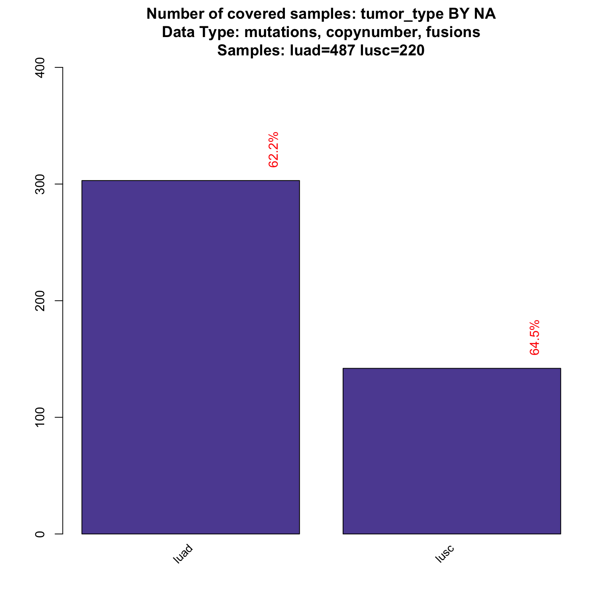
Panel detection power in the overall population
One common question that is often considered when trying to design custom target enrichment panel, is the percentage of the population that would be “captured” by the design of the panel. The following plot shows the number of alteration (x-axis) found in the sample (patient) population (y-axis). The panel detection power can be defined as the number of patients with at least one alteration detectable by the genomic panel. In this simulation we are interested in visualizing the detection power in a population background composed by patients from breast, lung, and gastric cancer. For simplicity fusion information are not included in the analysis.
coveragePlot(PTD_panel
, alterationType=c("mutations" , "copynumber")
# adjust population distribution by applying a weighted sampling bootstrap
, tumor.freqs = c(brca=brca_freq
, luad=luad_freq
, lusc=lusc_freq
, stad = stad_freq
, coadread = coadread_freq
)
)
Simulate the panel performance with a weighted bootstrap simulation run 200 times.
The previous plot shows the percentage of patients (y-axis) found to have at least one, two, three, etc, alterations (x-axis). The current design is capable of detecting 0.65% of the population of reference.
Panel detection-power in a tumor type specific population background
In the following plot we want to identify the performance of our panel for each single tumor types starting from out population of reference composed by the 3 cancers groups.
coveragePlot(PTD_panel
, alterationType=c("mutations" , "copynumber")
, grouping = "tumor_type"
, tumor.weights = c(brca=brca_tot
, luad=luad_tot
, lusc=lusc_tot
, stad = stad_tot
, coadread = coadread_tot
)
)
To allow and easy comparison of the detection power in different tumor types we have redesign the plots into one unique barplot.
# get data from the panel simulation
dt_power_lt <- coverageStackPlot(PTD_panel
, alterationType=c("mutations" , "copynumber")
, var="tumor_type"
, noPlot = TRUE
)
# convert to dataframe
dt_power_lt$plottedTable <- data.frame(dt_power_lt$plottedTable)
# calculate frequency
df <- data.frame()
for(i in 1:length(dt_power_lt$plottedTable)){
# find tot. number of samples in matching tumor
index <- which(names(dt_power_lt$Samples) %in% names(dt_power_lt$plottedTable[i]))
if(length(index) != 0 ){
# calculate frequency
# freq <- dt_power_lt$plottedTable[i] / dt_power_lt$Samples[index]
freq <- dt_power_lt$plottedTable[i] / dt_power_lt$Samples["all_tumors"]
}
# export
df <- rbind(df
, data.frame( tumor_id=names(dt_power_lt$Samples[index])
, freq=as.numeric(freq)
, n_samples = dt_power_lt$Samples[index]
)
)
}
# calculate confidence intervals
df$leftCI <- purrr::map2_dbl(df$freq, df$n_samples, .f=leftCIprop)
df$rightCI <- purrr::map2_dbl(df$freq, df$n_samples, .f=rightCIprop)
# sort dataframe
df <- df %>% dplyr::arrange(freq)
# plot
df %>%
ggplot(aes(x=reorder(tumor_id, freq), y=freq*100)) +
geom_bar(stat="identity") +
scale_y_continuous(limits = c(0,50)) +
geom_errorbar(aes( ymax= leftCI*100
, ymin= rightCI*100)
, position=position_dodge(0.9)
, size=0.2
) +
geom_text(aes(x=df$tumor_id
, y=df$freq*100+0.15
, label = sapply(df$freq*100
, function(x) paste(c(round(x, digits=2), "%")
, collapse=" ")
)
) , position = position_dodge(width = 1)
, vjust = 0.5
, hjust = -1.3
) +
coord_flip() +
labs(title="Genomic panel detection-power in different tumor types.") +
ylab(label = "detection power indicated as the overall population percentage") +
xlab(label = "tumor type (TCGA ID)")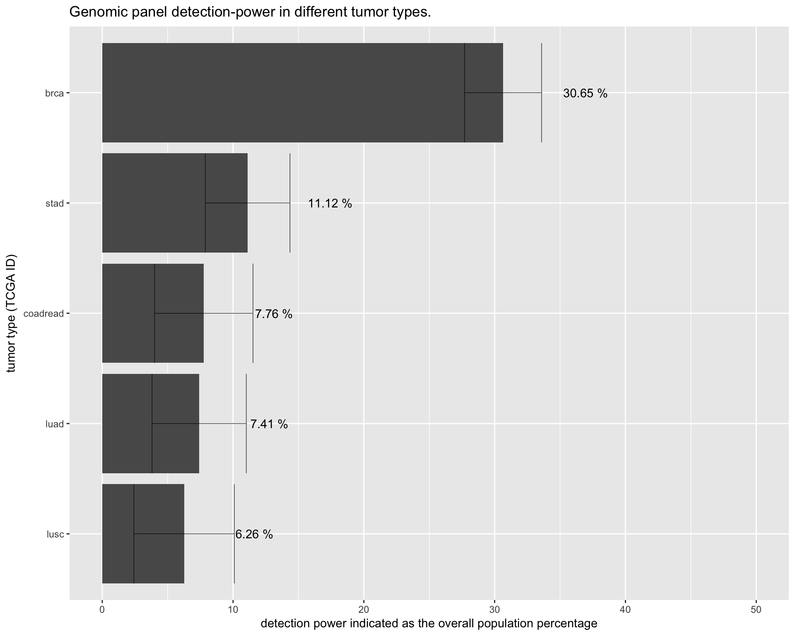
Patient treatment allocation
We can also easily address the issue of the allocation frequency in the different treatment groups. The following plot shows the number of patients with at least one, two or more alterations that can be targeted by each drug in the trial. This is particularly important in clinical trials when you want to predict the maximum number of patients that could be allocated into a drug treatment and identify potential cohorts with few patients allocated.
coveragePlot(PTD_panel
, alterationType=c("mutations" , "copynumber")
, grouping="drug"
# adjust population distribution by applying a weighted sampling bootstrap
, tumor.freqs = c(brca=brca_freq
, luad=luad_freq
, lusc=lusc_freq
, stad = stad_freq
, coadread = coadread_freq
)
, colNum = 2 # number of columns in the plot
, cex.main = 1 # size of the plot title
)
To make it simpler to compare, we will plot the detection power for each drug type in a unique plot. The following code will put all the previous plot together in one unique barplot.
# get data from the panel simulation
drug_df <- coveragePlot(PTD_panel
, alterationType=c("mutations" , "copynumber")
, grouping="drug"
# adjust population distribution by applying a weighted sampling bootstrap
, tumor.freqs = c(brca=brca_freq
, luad=luad_freq
, lusc=lusc_freq
, stad = stad_freq
, coadread = coadread_freq
)
, colNum = 2 # number of columns in the plot
, cex.main = 1 # size of the plot title
, noPlot=TRUE
)$plottedTable %>% data.frame()
# name first column with frequency of patients with at least one alteration that makes the patients elibigle for treatment with a specific drug
names(drug_df)[1] <- "freq"
# generate plot
drug_df %>%
tibble::rownames_to_column("drug_name") %>%
dplyr::filter(!grepl("no_drug", drug_name)) %>%
ggplot(aes(x=reorder(drug_name, freq), y=freq*100)) +
geom_bar(stat="identity") +
coord_flip() +
labs(title="Max frequencies of patients elibigle for each drug treatment") +
ylab(label = "detection power indicated as the overall population percentage") +
xlab(label = "Drug name")
Generate the same plot this time running a weighted bootstrap simulation.
# Run simulation
# ------------------------------------------------------------------------------
N_SIMULATIONS = 200
simul <- lapply(1:N_SIMULATIONS , function(x) {
drug_df <- coveragePlot(PTD_panel
, alterationType=c("mutations" , "copynumber")
, grouping="drug"
# adjust population distribution by applying a weighted sampling bootstrap
, tumor.weights = c(brca=ceiling(brca_tot/100)
, luad=ceiling(luad_tot/100)
, lusc=ceiling(lusc_tot/100)
, stad = ceiling(stad_tot/100)
, coadread = ceiling(coadread_tot/100)
)
, colNum = 2 # number of columns in the plot
, cex.main = 1 # size of the plot title
, noPlot=TRUE
, maxNumAlt = 1
)
return(drug_df$plottedTable/drug_df$Samples[1])
})
# Convert to dataframe
drug_vector <- unique(PTD_panel@arguments$panel$drug)
# Create a custom function to manage the problem with the function output CoveragaPlot not
# outputting the same number of ites in the simualation The function takes the labels, the
# vector and rematches, adding NA when a match is missing
value2slot <- function(value_vector, labels_vector){
# Cycle through the vector
temp_vector <- rep(0, times=length(labels_vector))
for (i in 1:length(labels_vector)){
# for each position in the vector fetch
value <- value_vector[i]
label <- rownames(value_vector)[i] %>% gsub("drug: ", "", .)
#get location index
index <- labels_vector %in% label
# qc
if(sum(index)>1) {stop("label mateched to more than one location")}
# replace value to that index position
temp_vector[which(index)] <- value
}
# add labels to the vector
names(temp_vector) <- labels_vector
return(temp_vector)
}
# test the function
#value2slot(simul[200][[1]], drug_vector)
# apply transformation to make it into a dataframe
simul_df <- purrr::map(simul, ~ value2slot(., drug_vector)) %>%
data.frame %>%
t()
# remove undesired rownames
row.names(simul_df) <- NULL
# GET STATS
# ------------------------------------------------------------------------------
# Calculate for each n° of alteration, the mean
detectionPower <- colMeans(simul_df)
# Calculate lower CI for bootstrap
leftCI <- apply(simul_df,2,function(x){left <- quantile(x, 0.025)})
# Calculate upper CI for bootstrap
rightCI <- apply(simul_df,2,function(x){right <- quantile(x, 0.975)})
# Preapre for column with # alterations
n_alterations <- 1:length(detectionPower)
# Put them all together in a data frame
dtpow <- data.frame(n_alterations, detectionPower, leftCI, rightCI) %>%
tibble::rownames_to_column("drug_name") %>%
dplyr::filter(!drug_name %in% "no_drug") # remove no_drug from the dataset
# Generate the plot
PTD_detection_image <- dtpow %>%
ggplot(aes(x=reorder(drug_name, detectionPower), y = detectionPower)) +
geom_bar(stat="identity" , position = position_dodge()) +
scale_y_continuous(limits = c(0,.5)) +
#scale_x_discrete(labels = dtpow[order(dtpow$detectionPower, decreasing = TRUE),"drug_name"]) +
#scale_x_continuous(breaks = n_alterations, trans = "reverse") +
geom_errorbar(aes(ymax=rightCI
, ymin=leftCI)
, position=position_dodge(0.9)
, size=0.2
) +
ggtitle("Max frequencies of patients elibigle for each drug treatment") +
ylab(label = "Detection power indicated as the overall population percentage") +
xlab(label = "Drug name") +
annotate("text"
, x=reorder(dtpow$drug_name, dtpow$detectionPower)
, y=dtpow$detectionPower + 0.15
, label= sapply(dtpow$detectionPower*100
, function(x) paste(c(round(x, digits = 2), "%")
, collapse = " ")
)
) +
coord_flip()
# Show image
PTD_detection_image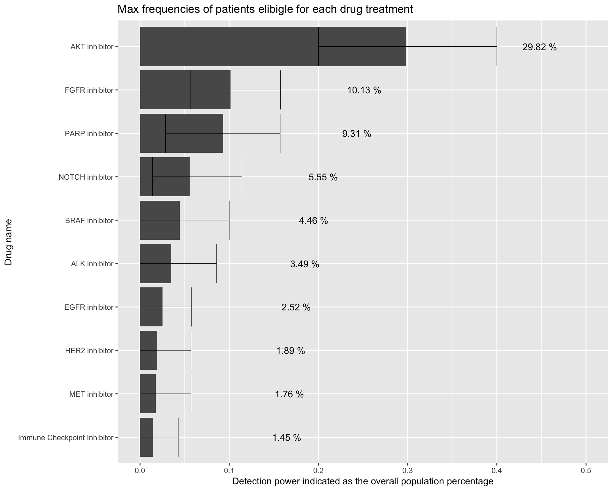
Panel performance evaluation
The design phase of a panel requires the user to make the important decision about what genes to include. PTD provides a suite of tools envisioned to aid the user during the decision process and evaluate the performance of the panel.
Rank genes in the design in terms of genomic space/detection power
The following plot was studied to investigate the relationship between the “cost” of adding new genes to the panel (as a function of genomic space to be included among the genomic regions to be targeted) and the detection power in terms of the mean number of alterations found in the samples (cancer population), for that specific gene in a specific set of tumor types.
In order to optimize a panel design, we might be interested to know:
- What genes are most altered in the tumor types of interest;
- What genes are “cheaper” to be sequenced (in terms of genomic spaces, or also size of the targeted region);
- What genes have the highest number of (alteration frequency) / (genomic space).
All tumors together
The following saturation plot shows the overall performance of the panel in a population that includes all tumor types of interest (balanced by tumor frequency in the population of reference). Genes can be ranked based on the ratio (alteration frequency) / (genomic space). Genes with highest mean number of alteration per sample and smallest size are listed first. The following genes in the plot are added one by one incrementally. This means that on the y-axis, every time we add a new gene, we are adding only the incremental contribution of alteration for that specific gene. This was done to prevent from counting twice (or more than once), patients with genes that were already found altered.
saturationPlot(PTD_panel
, alterationType=c("mutations" , "copynumber")
, adding="gene_symbol"
# adjust population distribution by applying a weighted sampling bootstrap
, tumor.weights=c(brca=brca_tot
, luad = luad_tot
, lusc = lusc_tot
, stad = stad_tot
, coadread = coadread_tot
)
, adding.order = "rate"
, legend = "out"
)
Each single cancer type will have different gene alteration frequencies, and therefore the order of the genes can change accordingly. In the following set of plots we will change the gene adding order, using asbolute ranking. This parameters, will not add genes based on their optimal ratio, but will priorities genes with the absolute highest number of alterations found in each single tumor group of interest
Breast Cancer
saturationPlot(PTD_panel
, alterationType=c("mutations" , "copynumber")
, adding="gene_symbol"
, tumor_type = "brca"
, adding.order = "absolute"
)
Lung Cancer, mutations and copy number alterations
saturationPlot(PTD_panel
, alterationType=c("mutations" , "copynumber")
, adding="gene_symbol"
, tumor_type = c("luad", "lusc")
, adding.order = "absolute"
)
Lung Cancer, only fusion alterations
saturationPlot(PTD_panel
, alterationType=c("fusions")
, adding="gene_symbol"
, tumor_type = c("luad", "lusc")
, adding.order = "absolute"
)## Warning in dataExtractor(object = object, alterationType =
## alterationType, : The following tumor types have no alteration to display:
## lusc
Gastric Cancer
saturationPlot(PTD_panel
, alterationType=c("mutations" , "copynumber")
, adding="gene_symbol"
, tumor_type = c("stad", "coadread")
, adding.order = "absolute"
)
Rank drugs in the design in terms of genomic space/patient allocation
Similarly to the previous set of plots, we can investigate the cost of adding a new drug in the study in terms of extra genomic space to be targeted by the panel with respect to the alteration frequency of population that can be captured.
saturationPlot(PTD_panel
, alterationType=c("mutations", "copynumber")
, adding="drug"
, y_measure="absolute"
, tumor.weights = c(brca=brca_tot
, luad=luad_tot
, lusc=lusc_tot
, stad = stad_tot
, coadread = coadread_tot
)
)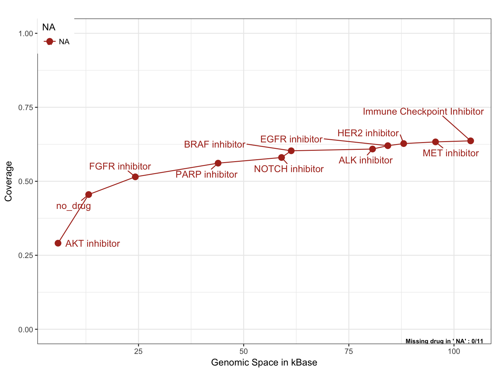
Similarly, we can separate the saturation line by tumor_types. (Note: In the following plot we do not need to apply the tumor.wight option, as we are grouping by tumor_types, Note2: no_drug indicates frequency associated with driver genes which are therefore not associated to any drug treatment in this specific design).
saturationPlot(PTD_panel
, alterationType=c("mutations", "copynumber")
, grouping="tumor_type"
, adding="drug"
, y_measure="absolute"
, legend = "out"
)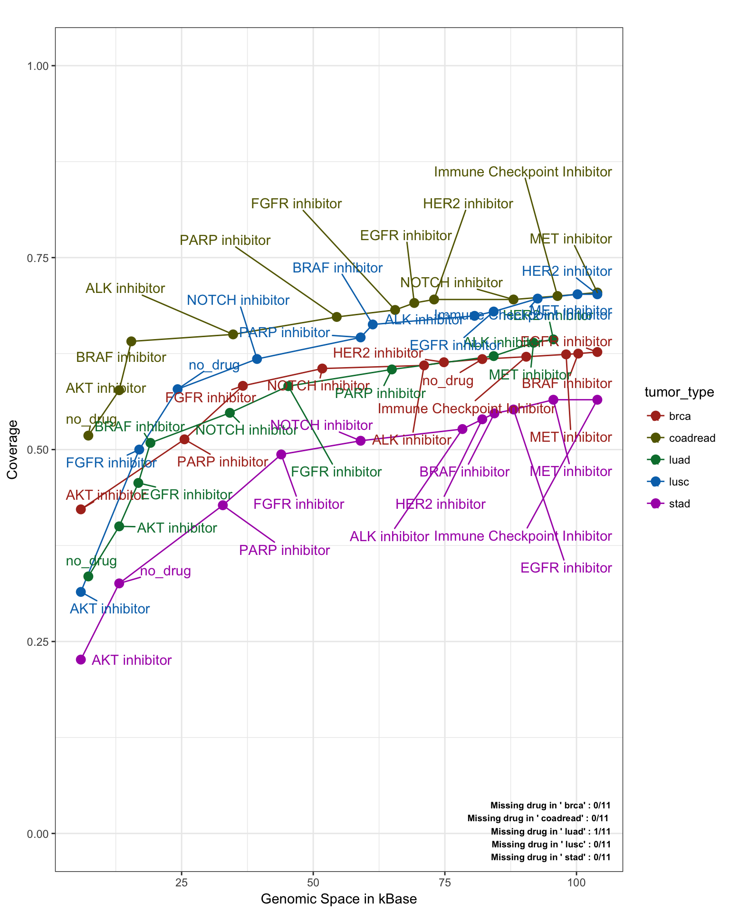
To improve the readability of the plot, we can look at each single tumor type individually.
Breast Cancer
# Generate plots for each tumor types
saturationPlot(PTD_panel
, alterationType=c("mutations", "copynumber")
, grouping="tumor_type"
, adding="drug"
, y_measure="absolute"
, tumor_type = "brca"
) 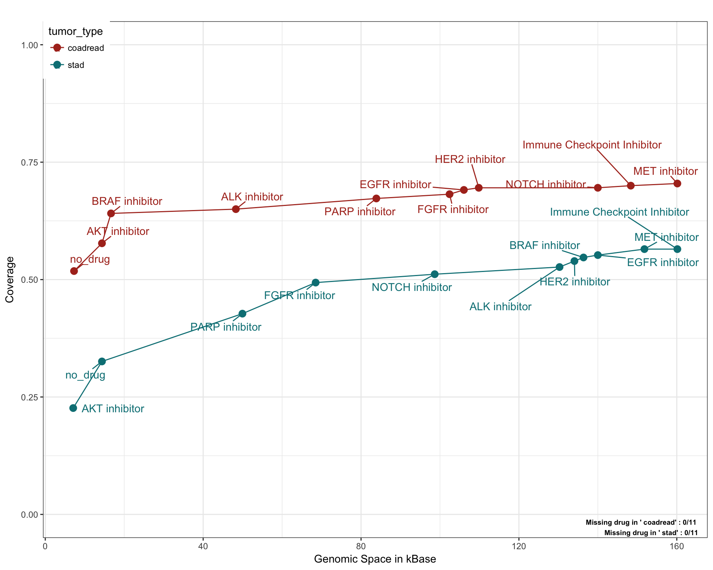
Lung Cancer
saturationPlot(PTD_panel
, alterationType=c("mutations", "copynumber")
, grouping="tumor_type"
, adding="drug"
, y_measure="absolute"
, tumor_type = c("luad", "lusc")
)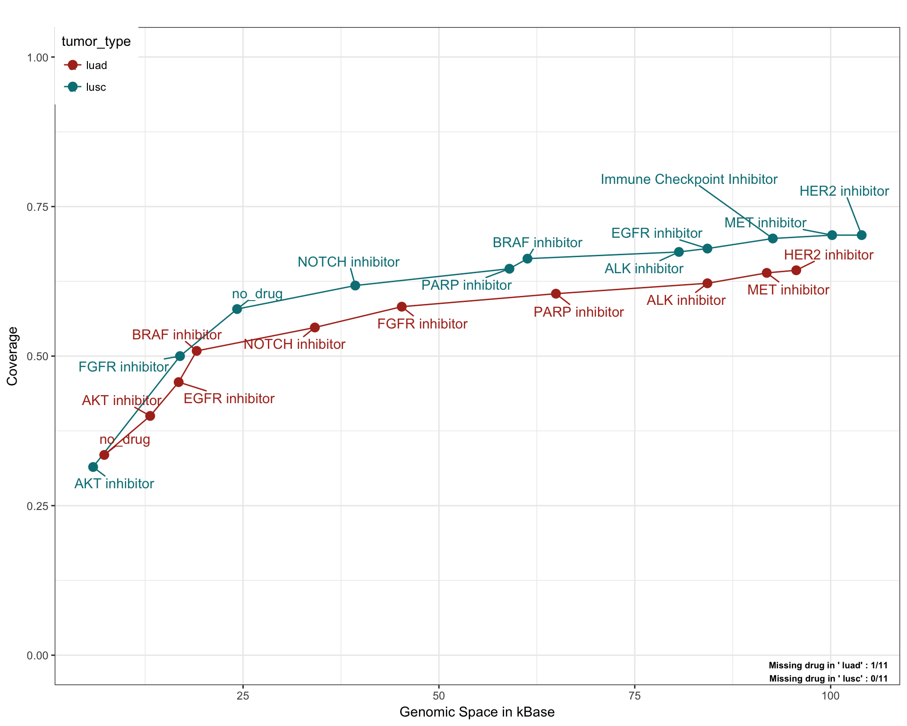
Gastric Cancer
saturationPlot(PTD_panel
, alterationType=c("mutations", "copynumber")
, grouping="tumor_type"
, adding="drug"
, y_measure="absolute"
, tumor_type = c("coadread", "stad")
) 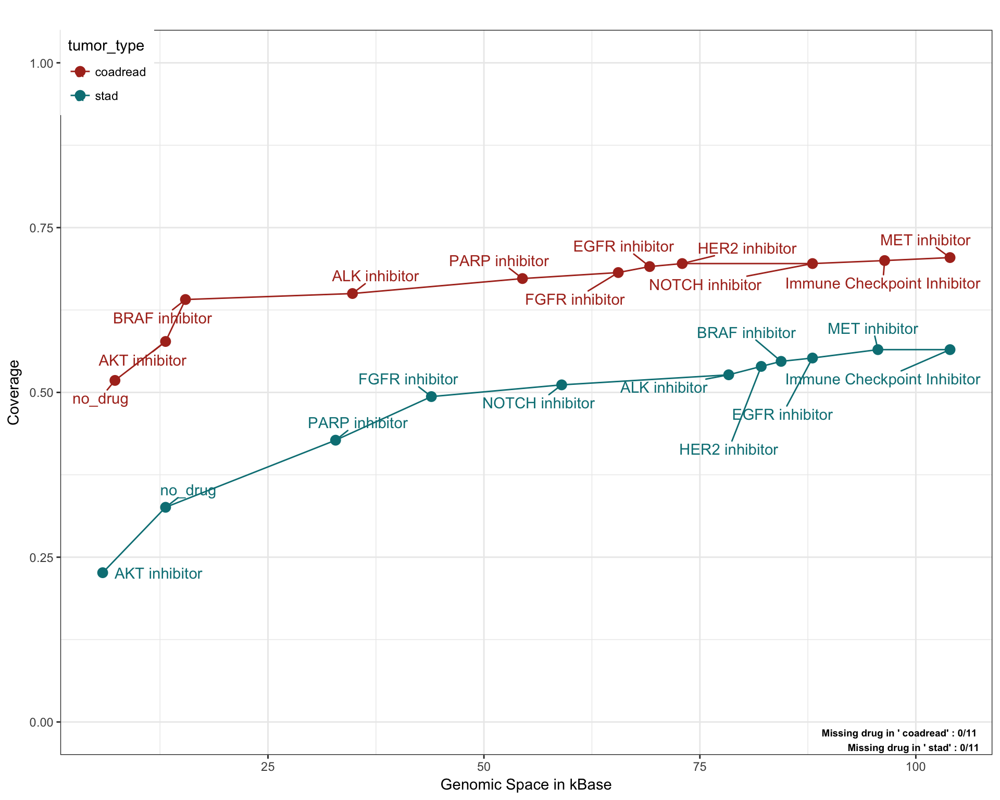
Panel detection power of each alteration type in the overall population
SNV and indels detection are today part of standard analysis for NGS application.However, CNA (Copy number alteration) detection, or fusion analysis are still not standardized analysis and they do not represent an easy implementation. In the following plot we will investigate the contribution of the detection power of each alteration type in case. This will help us quantify, in case we decide to opt out the detection of some of the alteration type, the influence of each single alteration type in the detection power.
saturationPlot(PTD_panel
, alterationType=c("mutations" , "copynumber", "fusions")
, adding="gene_symbol"
, tumor.weights=c(brca=brca_tot
, luad = luad_tot
, lusc = lusc_tot
, stad = stad_tot
, coadread = coadread_tot
)
,grouping="alteration_id"
)## Warning in dataExtractor(object = object, alterationType =
## alterationType, : The following tumor types have no alteration to display:
## stad, coadread
Drug targeting frequency plot
In case some of the drugs are multitarget (in this panel design, we are using drug families), it might be interesting to investigate what are the most targeted genes in our population of reference. We can visualize this information as an independent stack plot for each tumor type.
par(mfrow=c(3,1))
coverageStackPlot(PTD_panel
, alterationType=c("mutations", "copynumber")
, var="drug"
, grouping="gene_symbol"
, tumor_type="brca"
)
coverageStackPlot(PTD_panel
, alterationType=c("mutations" , "copynumber" , "fusions")
, var="drug"
, grouping="gene_symbol"
, tumor_type=c("luad", "lusc")
)
coverageStackPlot(PTD_panel
, alterationType=c("mutations" , "copynumber")
, var="drug"
, grouping="gene_symbol"
, tumor_type=c("stad", "coadread")
)
# reset plot settings
par(mfrow=c(1,1))We can also visualize co-occurrence and mutual exclusivity of the drugs in different tumor types.
Overall Co-occurance
coocMutexPlot(PTD_panel
, alterationType=c("mutations" , "copynumber")
, var="drug"
# , grouping="group"
, tumor.freqs = c(brca=brca_freq
, luad=luad_freq
, lusc=lusc_freq
, stad = stad_freq
, coadread = coadread_freq
)
)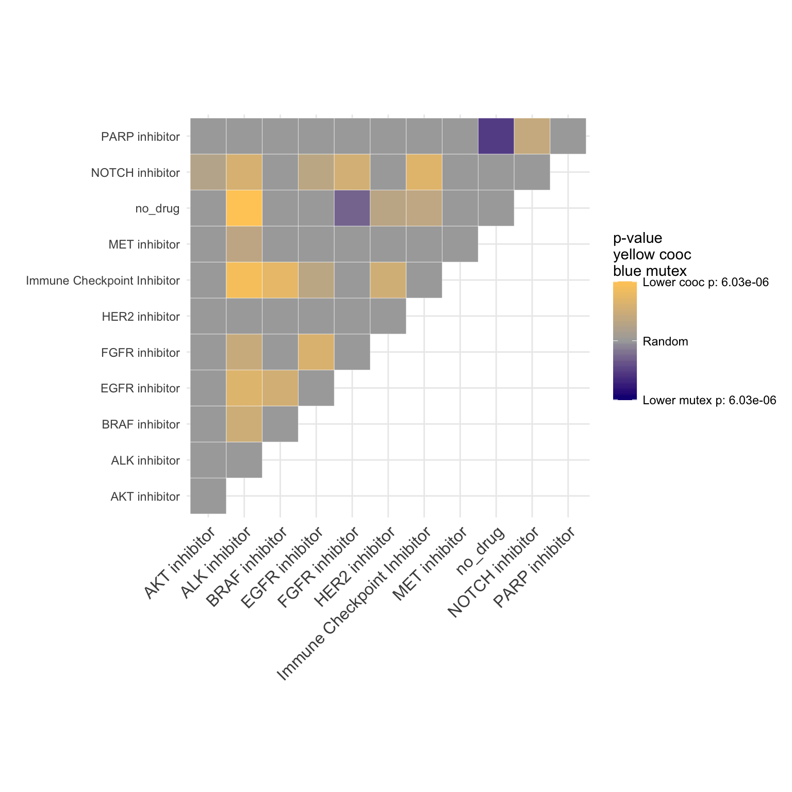
Breast cancer co-occurence plot
coocMutexPlot(PTD_panel
, alterationType=c("mutations" , "copynumber")
#, grouping="alteration_id"
, var="drug"
, tumor_types= "brca"
)
Lung cancer co-occurence plot
coocMutexPlot(PTD_panel
, alterationType=c("mutations" , "copynumber", "fusions" )
#, grouping="alteration_id"
, var="drug"
, tumor_types= c("luad", "lusc")
)## Warning in dataExtractor(object = object, alterationType =
## alterationType, : The following tumor types have no alteration to display:
## stad, coadread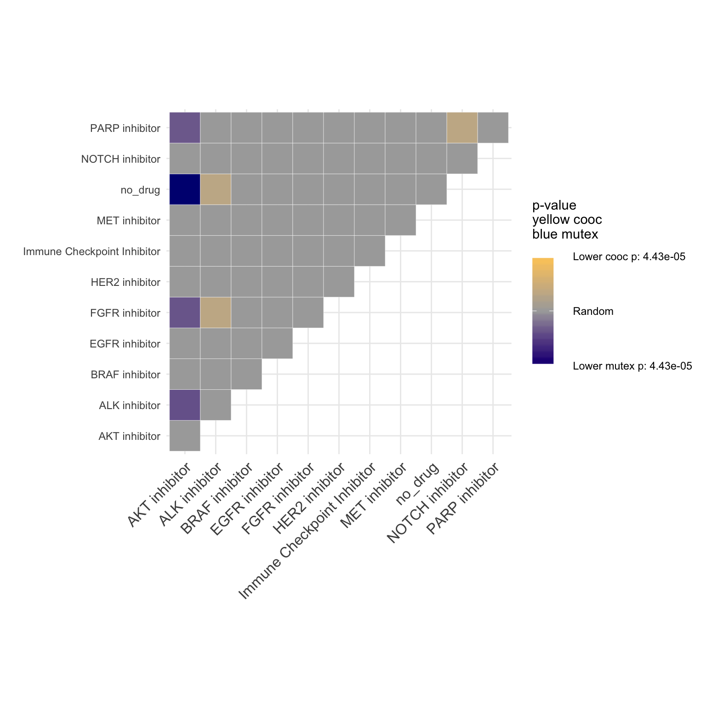
Gastric cancer co-occurence plot
coocMutexPlot(PTD_panel
, alterationType=c("mutations" , "copynumber")
#, grouping="alteration_id"
, var="drug"
, tumor_types= c("egc", "stad", "coadread")
)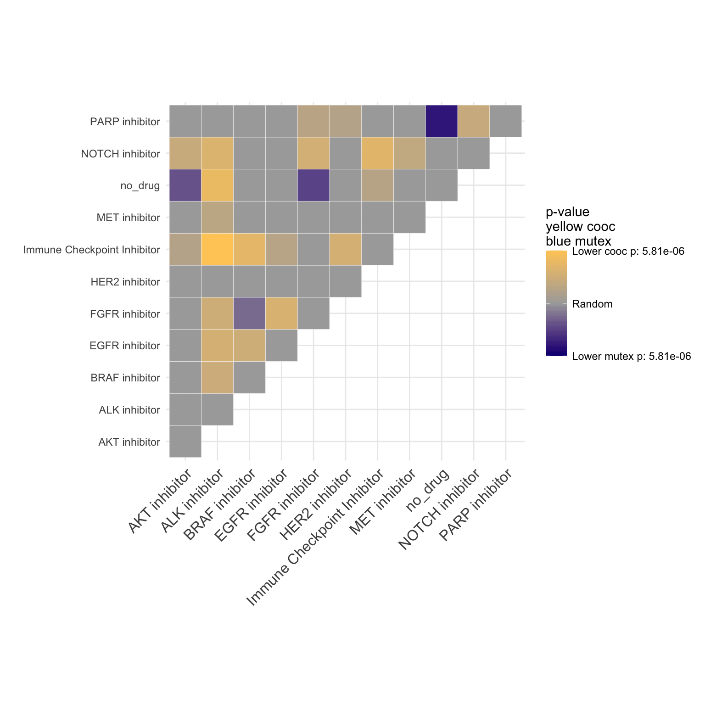
How many patients are eligible to more than one treatment?
Some patients are eligible to more than one therapy group. We will take advantage of this information in a later stage of the analysis as it will allows us to to optimize the patients allocation and improve the changes of the clinical trial of reaching statistical power.
# Prepare dataframe on which to run the analysis
# ------------------------------------------------------------------------------
# Extract data
data <- dataExtractor(PTD_panel , alterationType = c("mutations" , "copynumber" , "fusions"))## Warning in dataExtractor(PTD_panel, alterationType = c("mutations",
## "copynumber", : The following tumor types have no alteration to display:
## stad, coadread# Extract case_id and drug columns
dataDrug <- unique(data$data[ , c("case_id" , "drug")])
# calculate number of drug per patient, taking into account ALL samples
drugsPerPatient <- table( factor(dataDrug$case_id , levels = data$Samples$all_tumors) )
# Calculate the frequenecy of patients eligible to at least X number od drugs
alPatDrug <- sapply(1:max(drugsPerPatient), function(x){
sum(drugsPerPatient >= x) / length(drugsPerPatient)
}
) %>%
data.frame(drugs=.)
# Plot
alPatDrug %>%
ggplot(aes(x=1:length(drugs), y=drugs)) +
geom_bar(stat="identity") +
labs(title="Patients eligible to AT LEAST 1, 2, 3 or 4 ... drugs") +
ylab(label = "Eligibility frequency") +
xlab(label = "Number of drugs the patient is eligible for") +
theme(legend.position="none") +
geom_text(aes(label=stringr::str_c(round(drugs, digits=4)*100, " %"), y=drugs+0.05), position = position_dodge(width=0.9))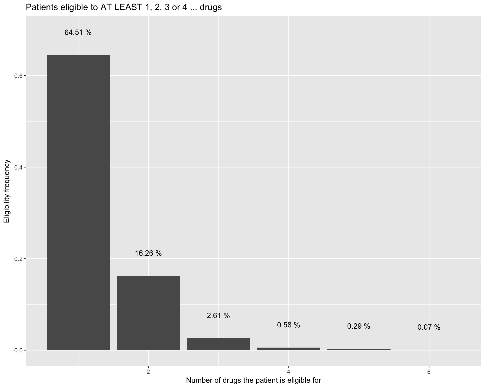
Power analysis
We can now simulate a clinical trial based on the drug-gene targeting design, and estimate the number of patients that needs to be recruited.
- We will look at 4 power levels: 0.6, 0.7, 0.8, 0.9
- and we will consider different Hazard ratios
Overall power analysis for the full study
# Generate plot
survPowerSampleSize(PTD_panel
, alterationType = c("mutations" , "copynumber")
, HR = c(0.5, 0.6, 0.7, 0.8)
, power = seq(0.6 , 0.9 , 0.1)
, alpha = 0.05
, case.fraction = 0.5
, tumor.weights = c(brca=brca_tot
, luad = luad_tot
, lusc = lusc_tot
, stad = stad_tot
, coadread = coadread_tot
)
)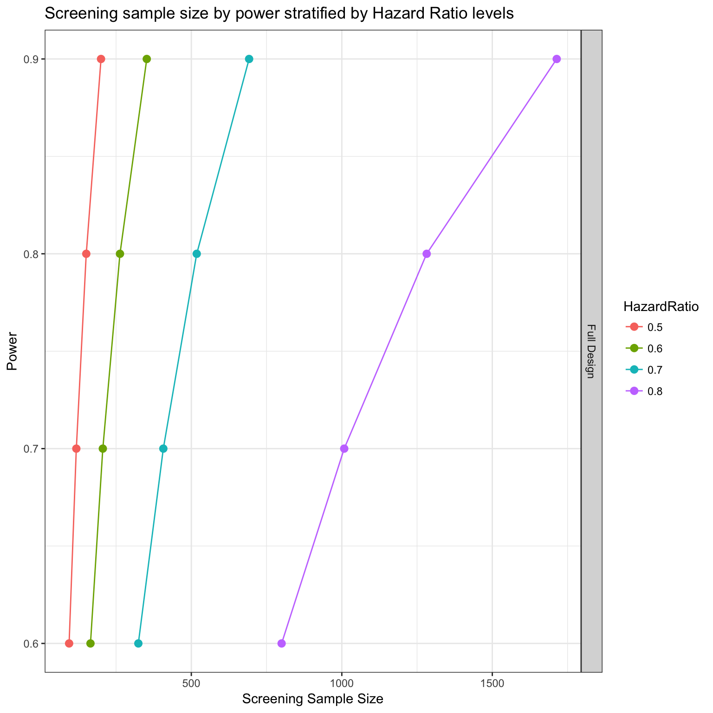
Preview the table with the data from the previous plot.
# Generate Table
survPowerSampleSize(PTD_panel
, HR = c(0.5, 0.6, 0.7, 0.8)
, power = seq(0.6 , 0.9 , 0.1)
, alpha = 0.05
, case.fraction = 0.5
, tumor.weights = c(brca=brca_tot
, luad = luad_tot
, lusc = lusc_tot
, stad = stad_tot
, coadread = coadread_tot
)
, noPlot =TRUE
) %>% kable()| Var | ScreeningSampleSize | EligibleSampleSize | Beta | Power | HazardRatio |
|---|---|---|---|---|---|
| Full Design | 92 | 59 | 0.4 | 0.6 | 0.5 |
| Full Design | 115 | 74 | 0.3 | 0.7 | 0.5 |
| Full Design | 148 | 95 | 0.2 | 0.8 | 0.5 |
| Full Design | 196 | 126 | 0.1 | 0.9 | 0.5 |
| Full Design | 162 | 104 | 0.4 | 0.6 | 0.6 |
| Full Design | 202 | 130 | 0.3 | 0.7 | 0.6 |
| Full Design | 258 | 166 | 0.2 | 0.8 | 0.6 |
| Full Design | 344 | 222 | 0.1 | 0.9 | 0.6 |
| Full Design | 317 | 204 | 0.4 | 0.6 | 0.7 |
| Full Design | 399 | 257 | 0.3 | 0.7 | 0.7 |
| Full Design | 507 | 327 | 0.2 | 0.8 | 0.7 |
| Full Design | 677 | 437 | 0.1 | 0.9 | 0.7 |
| Full Design | 783 | 505 | 0.4 | 0.6 | 0.8 |
| Full Design | 986 | 636 | 0.3 | 0.7 | 0.8 |
| Full Design | 1254 | 809 | 0.2 | 0.8 | 0.8 |
| Full Design | 1677 | 1082 | 0.1 | 0.9 | 0.8 |
Power analysis per group treatment
The power analysis can also be performed grouping by tumor types.
survPowerSampleSize(PTD_panel
,var = "tumor_type"
, HR = c(0.5, 0.6, 0.7)
, power = seq(0.6 , 0.9 , 0.1)
, alpha = 0.05
, case.fraction = 0.5
, tumor.weights = c(brca=brca_tot
, luad = luad_tot
, lusc = lusc_tot
, stad = stad_tot
, coadread = coadread_tot
)
)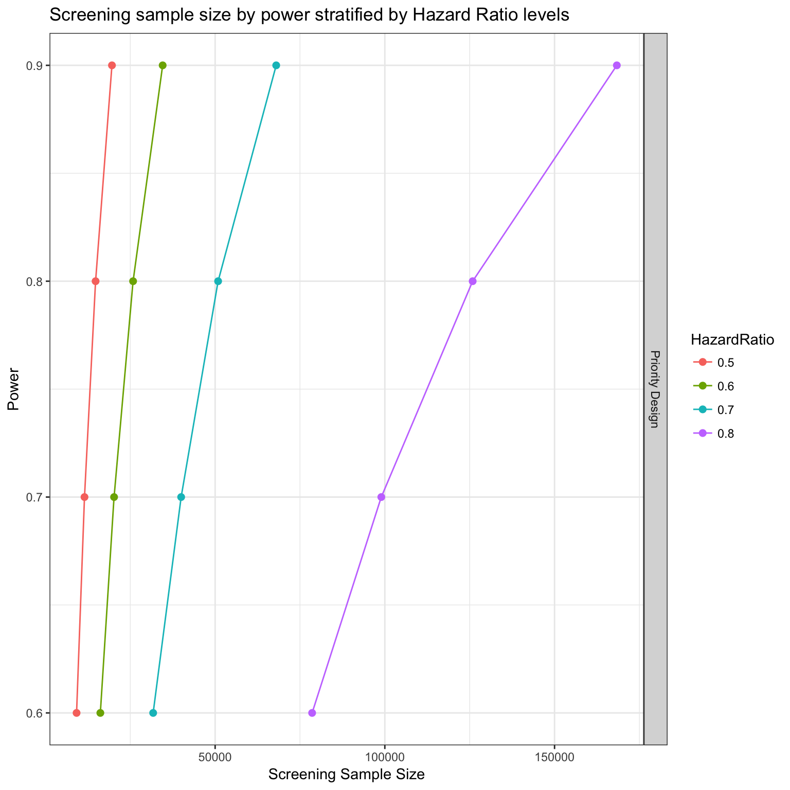
PATIENT ALLOCATION OPTIMIZATION
In this section we will investigate how the patients could be allocated to the treatment groups. It is particularly interesting to notice that some patients are eligible to more than one therapy group, allowing to run optimization algorithms in order to better balance the patients allocation distribution in the different treatment arms reducing the number samples to screen.
Number of patients required for the overall study to reach the required power (using PFS)
In this simulation we are using Progression Free Survival as the primary endpoint.
drugs <- c("HER2 inhibitor"
, "PARP inhibitor"
, "AKT inhibitor"
, "EGFR inhibitor"
, "FGFR inhibitor"
, "ALK inhibitor"
, "BRAF inhibitor"
, "MET inhibitor"
, "NOTCH inhibitor"
, "Immune Checkpoint Inhibitor")
# Show plot
survPowerSampleSize(PTD_panel
, HR = c(0.5, 0.6, 0.7, 0.8)
, power = seq(0.6 , 0.9 , 0.1)
, alpha = 0.05
, case.fraction = 0.5
, priority.trial = drugs
, priority.trial.order="optimal"
, var = "drug"
, tumor.weights = c(brca=brca_tot
, luad = luad_tot
, lusc = lusc_tot
, stad = stad_tot
, coadread = coadread_tot
)
)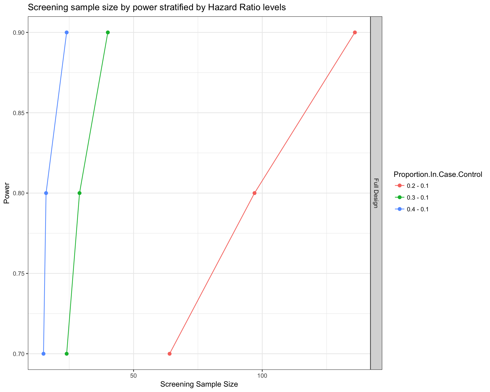
Show in a table the Power 0.8 and HR = 0.6
# Show it in a table
survPowerSampleSize(PTD_panel
, HR = 0.6
, power = 0.8
, alpha = 0.05
, case.fraction = 0.5
, priority.trial = drugs
, priority.trial.order = "optimal"
, var = "drug"
, noPlot = TRUE
, tumor.weights = c(brca = brca_tot
, luad = luad_tot
, lusc = lusc_tot
, stad = stad_tot
, coadread = coadread_tot
)
)$`HR:0.6 | HR0:1 | Power:0.8`$Summary %>%
data.frame() %>%
tibble::rownames_to_column("criteria") %>%
tidyr::gather(drug, patients, 2:ncol(.)) %>%
tidyr::spread(criteria, patients) %>%
dplyr::select(drug, Screened, Eligible, Not.Eligible) %>%
knitr::kable()## Warning in dataExtractor(object = object, alterationType =
## alterationType, : No data for expression. They will be removed from
## alterationType## Warning in dataExtractor(object = object, alterationType =
## alterationType, : The following tumor types have no alteration to display:
## stad, coadread##
## Minimum Eligible Sample Size to reach 80% of power with an HR equal to 0.6 and a HR0 equal to 1 for each drug is equal to: 166| drug | Screened | Eligible | Not.Eligible |
|---|---|---|---|
| AKT.inhibitor | 0 | 3940 | 0 |
| ALK.inhibitor | 0 | 428 | 0 |
| BRAF.inhibitor | 0 | 404 | 0 |
| EGFR.inhibitor | 0 | 411 | 0 |
| FGFR.inhibitor | 0 | 1543 | 0 |
| HER2.inhibitor | 15601 | 178 | 6403 |
| Immune.Checkpoint.Inhibitor | 1200 | 166 | 493 |
| MET.inhibitor | 0 | 225 | 0 |
| NOTCH.inhibitor | 0 | 1147 | 0 |
| PARP.inhibitor | 0 | 1469 | 0 |
| Total | 16801 | 9906 | 6895 |
extra
Number of patients to be recruited to reach power
propPowerSampleSize(PTD_panel
, noPlot=FALSE
, alterationType = c("mutations", "copynumber")
, pCase = c(0.2, 0.3 , 0.4)
, pControl = rep(0.1, 3)
, power = c(0.7, 0.8, 0.9)
, alpha= 0.1
, side = 1
) 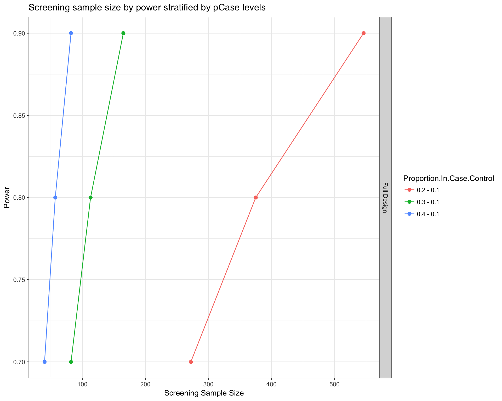
propPowerSampleSize(PTD_panel
, var = "drug"
, alterationType = c("mutations", "copynumber")
, priority.trial = drugs
, priority.trial.order="optimal"
, noPlot=TRUE
, pCase = 0.3
, pControl = 0.1
, side =1
, alpha= 0.1
, power =0.8
, case.fraction = 0.6
)## $`pCase:0.3 | pControl:0.1 | Power:0.8`
## $`pCase:0.3 | pControl:0.1 | Power:0.8`$Summary
## Immune Checkpoint Inhibitor MET inhibitor HER2 inhibitor
## Screened 4636 0 0
## Eligible 65 70 84
## Not.Eligible 2097 0 0
## EGFR inhibitor BRAF inhibitor ALK inhibitor NOTCH inhibitor
## Screened 0 0 0 0
## Eligible 86 119 105 254
## Not.Eligible 0 0 0 0
## PARP inhibitor FGFR inhibitor AKT inhibitor Total
## Screened 0 0 0 4636
## Eligible 409 351 1001 2540
## Not.Eligible 0 0 0 2097
##
## $`pCase:0.3 | pControl:0.1 | Power:0.8`$Screening.scheme
## Immune Checkpoint Inhibitor MET inhibitor
## Immune Checkpoint Inhibitor 4636 4571
## MET inhibitor 0 0
## HER2 inhibitor 0 0
## EGFR inhibitor 0 0
## BRAF inhibitor 0 0
## ALK inhibitor 0 0
## NOTCH inhibitor 0 0
## PARP inhibitor 0 0
## FGFR inhibitor 0 0
## AKT inhibitor 0 0
## HER2 inhibitor EGFR inhibitor BRAF inhibitor
## Immune Checkpoint Inhibitor 4502 4418 4332
## MET inhibitor 0 0 0
## HER2 inhibitor 0 0 0
## EGFR inhibitor 0 0 0
## BRAF inhibitor 0 0 0
## ALK inhibitor 0 0 0
## NOTCH inhibitor 0 0 0
## PARP inhibitor 0 0 0
## FGFR inhibitor 0 0 0
## AKT inhibitor 0 0 0
## ALK inhibitor NOTCH inhibitor PARP inhibitor
## Immune Checkpoint Inhibitor 4214 4110 3856
## MET inhibitor 0 0 0
## HER2 inhibitor 0 0 0
## EGFR inhibitor 0 0 0
## BRAF inhibitor 0 0 0
## ALK inhibitor 0 0 0
## NOTCH inhibitor 0 0 0
## PARP inhibitor 0 0 0
## FGFR inhibitor 0 0 0
## AKT inhibitor 0 0 0
## FGFR inhibitor AKT inhibitor
## Immune Checkpoint Inhibitor 3448 3097
## MET inhibitor 0 0
## HER2 inhibitor 0 0
## EGFR inhibitor 0 0
## BRAF inhibitor 0 0
## ALK inhibitor 0 0
## NOTCH inhibitor 0 0
## PARP inhibitor 0 0
## FGFR inhibitor 0 0
## AKT inhibitor 0 0
##
## $`pCase:0.3 | pControl:0.1 | Power:0.8`$Allocation.scheme
## Immune Checkpoint Inhibitor MET inhibitor
## Immune Checkpoint Inhibitor 65 70
## MET inhibitor 0 0
## HER2 inhibitor 0 0
## EGFR inhibitor 0 0
## BRAF inhibitor 0 0
## ALK inhibitor 0 0
## NOTCH inhibitor 0 0
## PARP inhibitor 0 0
## FGFR inhibitor 0 0
## AKT inhibitor 0 0
## Total 65 70
## HER2 inhibitor EGFR inhibitor BRAF inhibitor
## Immune Checkpoint Inhibitor 84 86 119
## MET inhibitor 0 0 0
## HER2 inhibitor 0 0 0
## EGFR inhibitor 0 0 0
## BRAF inhibitor 0 0 0
## ALK inhibitor 0 0 0
## NOTCH inhibitor 0 0 0
## PARP inhibitor 0 0 0
## FGFR inhibitor 0 0 0
## AKT inhibitor 0 0 0
## Total 84 86 119
## ALK inhibitor NOTCH inhibitor PARP inhibitor
## Immune Checkpoint Inhibitor 105 254 409
## MET inhibitor 0 0 0
## HER2 inhibitor 0 0 0
## EGFR inhibitor 0 0 0
## BRAF inhibitor 0 0 0
## ALK inhibitor 0 0 0
## NOTCH inhibitor 0 0 0
## PARP inhibitor 0 0 0
## FGFR inhibitor 0 0 0
## AKT inhibitor 0 0 0
## Total 105 254 409
## FGFR inhibitor AKT inhibitor
## Immune Checkpoint Inhibitor 351 1001
## MET inhibitor 0 0
## HER2 inhibitor 0 0
## EGFR inhibitor 0 0
## BRAF inhibitor 0 0
## ALK inhibitor 0 0
## NOTCH inhibitor 0 0
## PARP inhibitor 0 0
## FGFR inhibitor 0 0
## AKT inhibitor 0 0
## Total 351 1001
##
## $`pCase:0.3 | pControl:0.1 | Power:0.8`$Probability.scheme
## Immune Checkpoint Inhibitor MET inhibitor
## Immune Checkpoint Inhibitor 0.01402103 0.01523616
## MET inhibitor 0.00000000 0.00000000
## HER2 inhibitor 0.00000000 0.00000000
## EGFR inhibitor 0.00000000 0.00000000
## BRAF inhibitor 0.00000000 0.00000000
## ALK inhibitor 0.00000000 0.00000000
## NOTCH inhibitor 0.00000000 0.00000000
## PARP inhibitor 0.00000000 0.00000000
## FGFR inhibitor 0.00000000 0.00000000
## AKT inhibitor 0.00000000 0.00000000
## HER2 inhibitor EGFR inhibitor BRAF inhibitor
## Immune Checkpoint Inhibitor 0.01856627 0.01944298 0.02733119
## MET inhibitor 0.00000000 0.00000000 0.00000000
## HER2 inhibitor 0.00000000 0.00000000 0.00000000
## EGFR inhibitor 0.00000000 0.00000000 0.00000000
## BRAF inhibitor 0.00000000 0.00000000 0.00000000
## ALK inhibitor 0.00000000 0.00000000 0.00000000
## NOTCH inhibitor 0.00000000 0.00000000 0.00000000
## PARP inhibitor 0.00000000 0.00000000 0.00000000
## FGFR inhibitor 0.00000000 0.00000000 0.00000000
## AKT inhibitor 0.00000000 0.00000000 0.00000000
## ALK inhibitor NOTCH inhibitor PARP inhibitor
## Immune Checkpoint Inhibitor 0.02479339 0.06158192 0.1059603
## MET inhibitor 0.00000000 0.00000000 0.0000000
## HER2 inhibitor 0.00000000 0.00000000 0.0000000
## EGFR inhibitor 0.00000000 0.00000000 0.0000000
## BRAF inhibitor 0.00000000 0.00000000 0.0000000
## ALK inhibitor 0.00000000 0.00000000 0.0000000
## NOTCH inhibitor 0.00000000 0.00000000 0.0000000
## PARP inhibitor 0.00000000 0.00000000 0.0000000
## FGFR inhibitor 0.00000000 0.00000000 0.0000000
## AKT inhibitor 0.00000000 0.00000000 0.0000000
## FGFR inhibitor AKT inhibitor
## Immune Checkpoint Inhibitor 0.1016835 0.3230885
## MET inhibitor 0.0000000 0.0000000
## HER2 inhibitor 0.0000000 0.0000000
## EGFR inhibitor 0.0000000 0.0000000
## BRAF inhibitor 0.0000000 0.0000000
## ALK inhibitor 0.0000000 0.0000000
## NOTCH inhibitor 0.0000000 0.0000000
## PARP inhibitor 0.0000000 0.0000000
## FGFR inhibitor 0.0000000 0.0000000
## AKT inhibitor 0.0000000 0.0000000
##
## $`pCase:0.3 | pControl:0.1 | Power:0.8`$Base.probabilities
## Immune Checkpoint Inhibitor MET inhibitor
## 0.01402103 0.01602404
## HER2 inhibitor EGFR inhibitor
## 0.02003005 0.02153230
## BRAF inhibitor ALK inhibitor
## 0.03054582 0.03254882
## NOTCH inhibitor PARP inhibitor
## 0.06659990 0.10916375
## FGFR inhibitor AKT inhibitor
## 0.11417126 0.31347021surv2 <- survPowerSampleSize(PTD_panel
, alterationType = c("mutations", "copynumber")
, HR = 0.66
, power = 0.8
, alpha = 0.05
, case.fraction = 0.5
, ber=0.85
, fu=1.883
#, priority.trial.order="as.is"
, priority.trial.order="optimal"
, var = "drug"
, noPlot=TRUE)
kable(surv2 , row.names=FALSE)| Var | ScreeningSampleSize | EligibleSampleSize | Beta | Power | HazardRatio |
|---|---|---|---|---|---|
| AKT inhibitor | 801 | 251 | 0.2 | 0.8 | 0.66 |
| ALK inhibitor | 7712 | 251 | 0.2 | 0.8 | 0.66 |
| BRAF inhibitor | 8218 | 251 | 0.2 | 0.8 | 0.66 |
| EGFR inhibitor | 11657 | 251 | 0.2 | 0.8 | 0.66 |
| FGFR inhibitor | 2199 | 251 | 0.2 | 0.8 | 0.66 |
| HER2 inhibitor | 12532 | 251 | 0.2 | 0.8 | 0.66 |
| Immune Checkpoint Inhibitor | 17902 | 251 | 0.2 | 0.8 | 0.66 |
| MET inhibitor | 15664 | 251 | 0.2 | 0.8 | 0.66 |
| no_drug | 1700 | 251 | 0.2 | 0.8 | 0.66 |
| NOTCH inhibitor | 3769 | 251 | 0.2 | 0.8 | 0.66 |
| PARP inhibitor | 2300 | 251 | 0.2 | 0.8 | 0.66 |
| Full Design | 398 | 251 | 0.2 | 0.8 | 0.66 |
For the Abstract
PFS 2 samples calculations
Perform a 1-side 2-sample sample size calculation for PFS study using:
- fu 1.883
- case.fraction = 0.5
- ber = 0.85
- HR = 0.625
- power = 0.8
NOT OPTIMAL
library(parallel)
set.seed(111)
# NOT optimal
surv2 <- mclapply(1:100 , function(x){
out <- survPowerSampleSize(PTD_panel
, alterationType = c("mutations", "copynumber")
, HR = 0.625
, power = 0.8
, alpha = 0.05
, case.fraction = 0.5
, ber=0.85
, fu=1.883
, var = "drug"
, side = 1
, tumor.weights = c(brca=brca_tot
, luad=luad_tot
, lusc=lusc_tot
, stad = stad_tot
, coadread = coadread_tot
)
, noPlot=TRUE)
out <- out[ order(out$Var) , ]
return(out)
} , mc.cores=detectCores())
Screenings <- sapply(surv2 , function(x) x$ScreeningSampleSize)
medianScreening <- apply(Screenings , 1 , function(x) {
paste(median(x)
, paste0( "(" , quantile(x , 0.025)
, "-"
, quantile(x , 0.975) , ")"))
})
surv2DF <- data.frame(Var = surv2[[1]]$Var
, ScreeningSampleSize = medianScreening
, EligibleSampleSize = surv2[[1]]$EligibleSampleSize
, Beta = 0.2
, Power = 0.8
, HR = 0.625)
#export
#write.table(surv2, file = "~/Desktop/notoptimal_ptd-showcase.txt", quote=FALSE, sep=",")
#preview
kable(surv2DF[ match(c("Full Design" , drugs , "no_drug") , surv2DF$Var) , ] , row.names=FALSE)| Var | ScreeningSampleSize | EligibleSampleSize | Beta | Power | HR |
|---|---|---|---|---|---|
| Full Design | 241 (236.475-244) | 157 | 0.2 | 0.8 | 0.625 |
| HER2 inhibitor | 8774.5 (7866.55-10666.825) | 157 | 0.2 | 0.8 | 0.625 |
| PARP inhibitor | 1752.5 (1649.425-1901.35) | 157 | 0.2 | 0.8 | 0.625 |
| AKT inhibitor | 528 (511.475-545.1) | 157 | 0.2 | 0.8 | 0.625 |
| EGFR inhibitor | 6441.5 (5343.35-7328.25) | 157 | 0.2 | 0.8 | 0.625 |
| FGFR inhibitor | 1594 (1516.9-1718.575) | 157 | 0.2 | 0.8 | 0.625 |
| ALK inhibitor | 4615 (4204.75-5239.65) | 157 | 0.2 | 0.8 | 0.625 |
| BRAF inhibitor | 3728 (3346.725-4156.925) | 157 | 0.2 | 0.8 | 0.625 |
| MET inhibitor | 9604 (8102.3-11528.625) | 157 | 0.2 | 0.8 | 0.625 |
| NOTCH inhibitor | 2824.5 (2575.175-3033.725) | 157 | 0.2 | 0.8 | 0.625 |
| Immune Checkpoint Inhibitor | 11978 (9645.8-15127.35) | 157 | 0.2 | 0.8 | 0.625 |
| no_drug | 730 (705-762.575) | 157 | 0.2 | 0.8 | 0.625 |
- Median Number of patients necessary with CI: 52271 (48101.38-55613.68)
PRIORITY OPTIMAL
set.seed(112)
simulSurv2 <- mclapply(1:100 , function(x) {
survPowerSampleSize(PTD_panel
, alterationType = c("mutations", "copynumber")
, HR = 0.625
, power = 0.8
, alpha = 0.05
, ber=0.85
, fu=1.883
, case.fraction = 0.5
, collapseByGene=TRUE
, tumor.weights = c(brca=brca_tot
, luad=luad_tot
, lusc=lusc_tot
, stad = stad_tot
, coadread = coadread_tot
)
, var = "drug"
, noPlot=TRUE
, side = 1
, priority.trial=drugs
, priority.trial.order="optimal")$`HR:0.625 | HR0:1 | Power:0.8`$Summary
} , mc.cores=detectCores())
summaryMat2 <- simulSurv2[[1]]
for(i in rownames(summaryMat2)){
for(j in colnames(summaryMat2)){
vec <- sapply(simulSurv2 , function(x) x[i , j])
summaryMat2[i , j] <- paste(median(vec) ,
paste0( "(" , quantile(vec , 0.025)
, "-"
, quantile(vec , 0.975) , ")"))
}
}
#save
#write.table(summaryMat2, file = "~/Desktop/optimal_ptd-showcase.txt", quote=FALSE, sep=",")
#preview
kable(summaryMat2)| Immune Checkpoint Inhibitor | MET inhibitor | HER2 inhibitor | EGFR inhibitor | ALK inhibitor | BRAF inhibitor | NOTCH inhibitor | PARP inhibitor | FGFR inhibitor | AKT inhibitor | Total | |
|---|---|---|---|---|---|---|---|---|---|---|---|
| Screened | 11845 (781.65-14314.8) | 0 (0-11480.825) | 0 (0-770.424999999999) | 0 (0-0) | 0 (0-0) | 0 (0-0) | 0 (0-0) | 0 (0-0) | 0 (0-0) | 0 (0-0) | 12005 (10475.75-14314.8) |
| Eligible | 157 (157-172.05) | 179.5 (157-240) | 190 (157-238.625) | 274.5 (224.9-344.625) | 310.5 (251.95-385.575) | 412.5 (333.375-525.4) | 562 (468.275-661.525) | 849 (728.7-1054.1) | 807 (702.125-967.625) | 2549.5 (2193.825-3009.4) | 6269 (5483.55-7438.725) |
| Not.Eligible | 5691 (376.875-6908.425) | 0 (0-5484.625) | 0 (0-373.049999999999) | 0 (0-0) | 0 (0-0) | 0 (0-0) | 0 (0-0) | 0 (0-0) | 0 (0-0) | 0 (0-0) | 5791.5 (4970.45-6908.425) |
Number of patients necessary under optimal design (median value with CI): 12005 (10475.75-14314.8)
Basically the number of samples screened for Immune check inhibitor, that is targetable only in a very small number of patients, is sufficient to cover all the other drugs in most of the cases.
The percentage of samples saved from passing from a non optimal (all drugs separated) to an optimal design (all drugs evaluated together) is 77.03%
PRIORITY NON OPTIMAL
Extract drug frequencies
drugFreqs <- coverageStackPlot(PTD_panel
, alterationType = c("mutations", "copynumber")
, var = "drug"
, grouping = NA
, tumor.freqs = c(brca=brca_freq
, luad=luad_freq
, lusc=lusc_freq
, stad = stad_freq
, coadread = coadread_freq)
, noPlot=TRUE)$plottedTable[1, ]
# Sort from highest to lowest
drugFreqs <- sort(drugFreqs , decreasing = TRUE)
# Remove no_drug
drugFreqs <- drugFreqs[ names(drugFreqs)!="no_drug"]Perform a priority trial starting from the drug with the highest frequency (NON OPTIMAL)
set.seed(112)
simulSurv2_NO <- mclapply(1:100 , function(x) {
survPowerSampleSize(PTD_panel
, alterationType = c("mutations", "copynumber")
, HR = 0.625
, power = 0.8
, alpha = 0.05
, ber=0.85
, fu=1.883
, case.fraction = 0.5
, collapseByGene=TRUE
, tumor.weights = c(brca=brca_tot
, luad=luad_tot
, lusc=lusc_tot
, stad = stad_tot
, coadread = coadread_tot
)
, var = "drug"
, noPlot=TRUE
, side = 1
, priority.trial=names(drugFreqs)
, priority.trial.order="as.is")$`HR:0.625 | HR0:1 | Power:0.8`$Summary
} , mc.cores=detectCores())
summaryMat2_NO <- simulSurv2_NO[[1]]
for(i in rownames(summaryMat2_NO)){
for(j in colnames(summaryMat2_NO)){
vec <- sapply(simulSurv2_NO , function(x) x[i , j])
summaryMat2_NO[i , j] <- paste(median(vec) ,
paste0( "(" , quantile(vec , 0.025)
, "-"
, quantile(vec , 0.975) , ")"))
}
}
#save
#write.table(summaryMat2_NO, file = "~/Desktop/optimal_ptd-showcase.txt", quote=FALSE, sep=",")
#preview
kable(summaryMat2_NO)| AKT inhibitor | FGFR inhibitor | PARP inhibitor | NOTCH inhibitor | BRAF inhibitor | ALK inhibitor | EGFR inhibitor | HER2 inhibitor | MET inhibitor | Immune Checkpoint Inhibitor | Total | |
|---|---|---|---|---|---|---|---|---|---|---|---|
| Screened | 530.5 (513-547) | 1216.5 (1106.6-1311) | 652 (517.475-829.05) | 1741 (1428.4-2001.575) | 1001 (521-1515.775) | 2553 (1779.85-3316.625) | 2411 (1152.675-3671.825) | 5846.5 (4301.675-7585.2) | 2914.5 (589.35-5586.89999999999) | 6170 (3216.425-10395.275) | 24621.5 (21591.7-29794.025) |
| Eligible | 7091.5 (6029.85-8795.15) | 1741.5 (1530.6-2093.525) | 1374.5 (1170.15-1621.05) | 677.5 (560.475-839.9) | 692 (581.475-871.425) | 393 (318.325-479) | 350.5 (291.9-438.5) | 207.5 (183.475-235.675) | 201.5 (177.95-235.05) | 157 (157-157) | 12894.5 (11077.775-15610.775) |
| Not.Eligible | 255 (243.475-269) | 584.5 (525.9-636.575) | 313.5 (249.475-393.575) | 833 (678.25-961.675) | 481 (248.575-724.8) | 1219.5 (847.325-1591.75) | 1165 (544.25-1752.875) | 2824 (2062.85-3686.875) | 1394.5 (283.8-2714.425) | 6088.5 (3169.225-10286.125) | 15107 (12318.6-19494.1) |
Number of patients necessary under non optimal priority design (median value with CI): 24621.5 (21591.7-29794.025)
FULL SUMMARY OF THE THREE METHODS
Create a dataframe with median and CI for the three methods
pfs2 <- data.frame( Method = c("Indipendent" , "Priority Non Optimal" , "Priority Optimal")
, Median = c(median(n_patients_notoptimal)
, median(n_patients_optimal_NO)
, median(n_patients_optimal))
, CI_low = c(quantile(n_patients_notoptimal , 0.025)
, quantile(n_patients_optimal_NO , 0.025)
, quantile(n_patients_optimal , 0.025))
, CI_high = c(quantile(n_patients_notoptimal , 0.975)
, quantile(n_patients_optimal_NO , 0.975)
, quantile(n_patients_optimal , 0.975)))Plot as barplot
gpfs2 <- ggplot(pfs2, aes(x=Method, y=Median)) +
geom_bar(position=position_dodge(), stat="identity"
, fill = c("firebrick3" , "deepskyblue4" , "seagreen4")
, col=rep("black",3)) +
geom_errorbar(aes(ymin=CI_low, ymax=CI_high)
, width=.2
, position=position_dodge(.9)
, size=0.2
)
gpfs2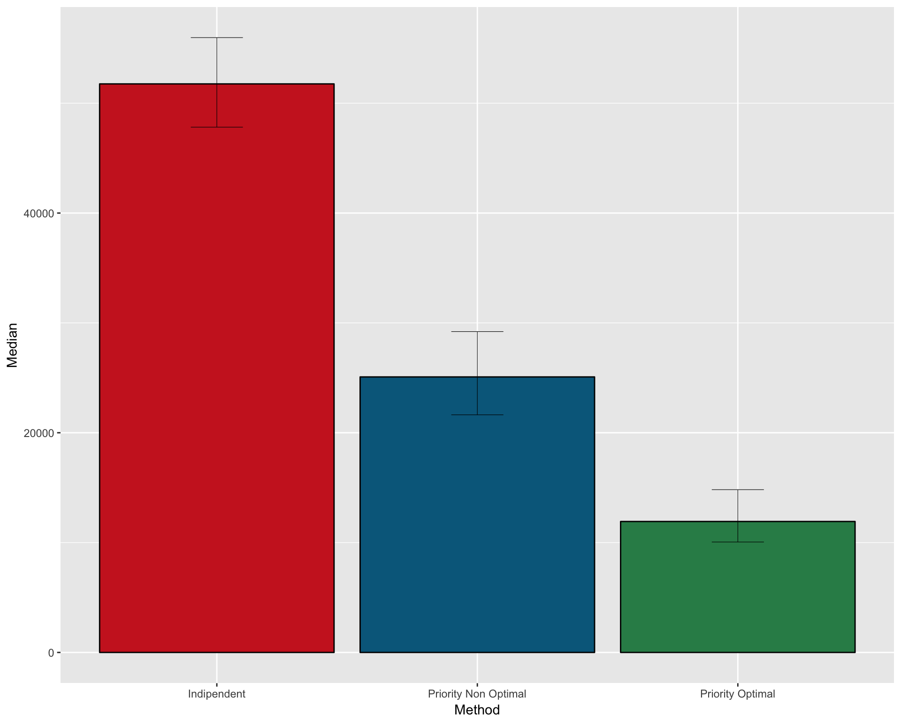
ggsave(filename="version_6.0/Figures/fig5A.svg", plot=gpfs2, device = "svg")## Saving 10 x 8 in imagePFS 1 sample calculations
Perform a 1-side 1-sample sample size calculation for PFS study using:
- MED0 = 0.8154673 (corresponding to ber = 0.85)
- MED1 = 1.304748 (corresponding to MED0/HR)
- power = 0.8
- fu = 1.883
NOT OPTIMAL
set.seed(111)
# NOT optimal
surv3 <- mclapply(1:100 , function(x){
out <- survPowerSampleSize1Arm(PTD_panel
, alterationType = c("mutations", "copynumber")
, MED0 = 0.8154673
, MED1 = 1.304748
, power = 0.8
, alpha = 0.05
, fu = 1.883
, var = "drug"
, side = 1
, tumor.weights = c(brca=brca_tot
, luad=luad_tot
, lusc=lusc_tot
, stad = stad_tot
, coadread = coadread_tot
)
, noPlot=TRUE)
out <- out[ order(out$Var) , ]
return(out)
} , mc.cores=detectCores())
Screenings <- sapply(surv3 , function(x) x$ScreeningSampleSize)
medianScreening <- apply(Screenings , 1 , function(x) {
paste(median(x)
, paste0( "(" , quantile(x , 0.025)
, "-"
, quantile(x , 0.975) , ")"))
})
surv3DF <- data.frame(Var = surv3[[1]]$Var
, ScreeningSampleSize = medianScreening
, EligibleSampleSize = surv3[[1]]$EligibleSampleSize
, Beta = 0.2
, Power = 0.8
, MED1 = 1.304748)
#export
#write.table(surv3, file = "~/Desktop/notoptimal_ptd-showcase.txt", quote=FALSE, sep=",")
#preview
kable(surv3DF[ match(c("Full Design" , drugs , "no_drug") , surv3DF$Var) , ] , row.names=FALSE)| Var | ScreeningSampleSize | EligibleSampleSize | Beta | Power | MED1 |
|---|---|---|---|---|---|
| Full Design | 62 (61-63) | 40 | 0.2 | 0.8 | 1.304748 |
| HER2 inhibitor | 2264 (1960.725-2800) | 40 | 0.2 | 0.8 | 1.304748 |
| PARP inhibitor | 445 (422.425-474) | 40 | 0.2 | 0.8 | 1.304748 |
| AKT inhibitor | 135 (130-139) | 40 | 0.2 | 0.8 | 1.304748 |
| EGFR inhibitor | 1627 (1432.925-1921) | 40 | 0.2 | 0.8 | 1.304748 |
| FGFR inhibitor | 406 (382.95-429.525) | 40 | 0.2 | 0.8 | 1.304748 |
| ALK inhibitor | 1156 (1058.9-1325.825) | 40 | 0.2 | 0.8 | 1.304748 |
| BRAF inhibitor | 938.5 (848.6-1069.925) | 40 | 0.2 | 0.8 | 1.304748 |
| MET inhibitor | 2425 (2081.6-2925.15) | 40 | 0.2 | 0.8 | 1.304748 |
| NOTCH inhibitor | 714 (654.375-790.25) | 40 | 0.2 | 0.8 | 1.304748 |
| Immune Checkpoint Inhibitor | 3018 (2572.95-3552.15) | 40 | 0.2 | 0.8 | 1.304748 |
| no_drug | 186 (180-193.525) | 40 | 0.2 | 0.8 | 1.304748 |
- Median Number of patients necessary with CI: 13256 (12400.65-14333.52)
OPTIMAL
set.seed(112)
simulSurv3 <- mclapply(1:100 , function(x) {
survPowerSampleSize1Arm(PTD_panel
, alterationType = c("mutations", "copynumber")
, MED0 = 0.8154673
, MED1 = 1.304748
, power = 0.8
, alpha = 0.05
, fu = 1.883
, var = "drug"
, side = 1
, tumor.weights = c(brca=brca_tot
, luad=luad_tot
, lusc=lusc_tot
, stad = stad_tot
, coadread = coadread_tot
)
, noPlot=TRUE
, priority.trial=drugs
, priority.trial.order="optimal")$`MED1:1.304748 | MED0:0.8154673 | Power:0.8`$Summary
} , mc.cores=detectCores())
summaryMat3 <- simulSurv3[[1]]
for(i in rownames(summaryMat3)){
for(j in colnames(summaryMat3)){
vec <- sapply(simulSurv3 , function(x) x[i , j])
summaryMat3[i , j] <- paste(median(vec) ,
paste0( "(" , quantile(vec , 0.025)
, "-"
, quantile(vec , 0.975) , ")"))
}
}
#save
#write.table(summaryMat3, file = "~/Desktop/optimal_ptd-showcase.txt", quote=FALSE, sep=",")
#preview
kable(summaryMat3)| Immune Checkpoint Inhibitor | MET inhibitor | HER2 inhibitor | EGFR inhibitor | ALK inhibitor | BRAF inhibitor | NOTCH inhibitor | PARP inhibitor | FGFR inhibitor | AKT inhibitor | Total | |
|---|---|---|---|---|---|---|---|---|---|---|---|
| Screened | 3018 (241.15-3697.25) | 0 (0-2745.4) | 0 (0-137.049999999999) | 0 (0-0) | 0 (0-0) | 0 (0-0) | 0 (0-0) | 0 (0-0) | 0 (0-0) | 0 (0-0) | 3052 (2689.475-3697.25) |
| Eligible | 40 (40-43) | 45 (40-58.525) | 49 (40-62) | 71.5 (57-88.525) | 80 (66-99.525) | 106 (90-134.525) | 143 (121-176) | 219.5 (182.95-265.2) | 206 (175.95-252.525) | 639 (559.95-781.5) | 1589 (1409.375-1917.125) |
| Not.Eligible | 1434.5 (118.025-1764.675) | 0 (0-1310.775) | 0 (0-65.9999999999997) | 0 (0-0) | 0 (0-0) | 0 (0-0) | 0 (0-0) | 0 (0-0) | 0 (0-0) | 0 (0-0) | 1467.5 (1281.225-1764.675) |
Number of patients necessary under optimal design (median value with CI): 3052 (2689.475-3697.25)
Basically the number of samples screened for Immune check inhibitor, that is targetable only in a very small number of patients, is sufficient to cover all the other drugs in most of the cases.
The percentage of samples saved from passing from a non optimal (all drugs separated) to an optimal design (all drugs evaluated together) is 76.98%
PRIORITY NON OPTIMAL
Perform a priority trial starting from the drug with the highest frequency (NON OPTIMAL)
set.seed(112)
simulSurv3_NO <- mclapply(1:100 , function(x) {
survPowerSampleSize1Arm(PTD_panel
, alterationType = c("mutations", "copynumber")
, MED0 = 0.8154673
, MED1 = 1.304748
, power = 0.8
, alpha = 0.05
, fu = 1.883
, var = "drug"
, side = 1
, tumor.weights = c(brca=brca_tot
, luad=luad_tot
, lusc=lusc_tot
, stad = stad_tot
, coadread = coadread_tot)
, noPlot=TRUE
, priority.trial=names(drugFreqs)
, priority.trial.order="as.is")$`MED1:1.304748 | MED0:0.8154673 | Power:0.8`$Summary
} , mc.cores=detectCores())
summaryMat3_NO <- simulSurv3_NO[[1]]
for(i in rownames(summaryMat3_NO)){
for(j in colnames(summaryMat3_NO)){
vec <- sapply(simulSurv3_NO , function(x) x[i , j])
summaryMat3_NO[i , j] <- paste(median(vec) ,
paste0( "(" , quantile(vec , 0.025)
, "-"
, quantile(vec , 0.975) , ")"))
}
}
#save
#write.table(summaryMat3, file = "~/Desktop/optimal_ptd-showcase.txt", quote=FALSE, sep=",")
#preview
kable(summaryMat3_NO)| AKT inhibitor | FGFR inhibitor | PARP inhibitor | NOTCH inhibitor | BRAF inhibitor | ALK inhibitor | EGFR inhibitor | HER2 inhibitor | MET inhibitor | Immune Checkpoint Inhibitor | Total | |
|---|---|---|---|---|---|---|---|---|---|---|---|
| Screened | 135 (131-139.525) | 309 (275.75-338.525) | 171 (129.7-216.05) | 445.5 (370.375-501.15) | 244.5 (131-403.525) | 643 (464.825-822.4) | 582 (349.175-919.15) | 1555.5 (1159.375-2115.375) | 651 (42.75-1229.675) | 1516.5 (669.95-2399.875) | 6314 (5544.425-7294.25) |
| Eligible | 1822 (1583.275-2120.05) | 443.5 (383.475-535.525) | 349 (300.475-424.75) | 170 (147.475-208.15) | 177 (146.425-201.575) | 102 (84.9-120) | 91 (74-106.525) | 52 (47-62.1) | 52 (45-59) | 40 (40-40) | 3282 (2904.75-3790.25) |
| Not.Eligible | 65 (62-69) | 148 (131.95-164.525) | 82.5 (61.85-103) | 214.5 (176.475-242.1) | 118 (63.425-192.05) | 306.5 (224.125-391.625) | 282.5 (163.4-433.3) | 742.5 (551.5-1016.7) | 310.5 (20.425-585.525) | 1497 (659.9-2373.825) | 3758 (3149.7-4663.4) |
Number of patients necessary under non optimal priority design (median value with CI): 6314 (5544.425-7294.25)
FULL SUMMARY OF THE THREE METHODS
Create a dataframe with median and CI for the three methods
pfs1 <- data.frame( Method = c("Indipendent" , "Priority Non Optimal" , "Priority Optimal")
, Median = c(median(n_patients_notoptimal)
, median(n_patients_optimal_NO)
, median(n_patients_optimal))
, CI_low = c(quantile(n_patients_notoptimal , 0.025)
, quantile(n_patients_optimal_NO , 0.025)
, quantile(n_patients_optimal , 0.025))
, CI_high = c(quantile(n_patients_notoptimal , 0.975)
, quantile(n_patients_optimal_NO , 0.975)
, quantile(n_patients_optimal , 0.975)))
kable(pfs1)| Method | Median | CI_low | CI_high |
|---|---|---|---|
| Indipendent | 13255.5 | 12400.650 | 14333.52 |
| Priority Non Optimal | 6314.0 | 5544.425 | 7294.25 |
| Priority Optimal | 3052.0 | 2689.475 | 3697.25 |
Plot as barplot
gpfs1 <- ggplot(pfs1, aes(x=Method, y=Median)) +
geom_bar(position=position_dodge(), stat="identity"
, fill = c("firebrick3" , "deepskyblue4" , "seagreen4")
, col=rep("black",3)) +
geom_errorbar(aes(ymin=CI_low, ymax=CI_high)
, width=.2
, position=position_dodge(.9)
, size=0.2
)
gpfs1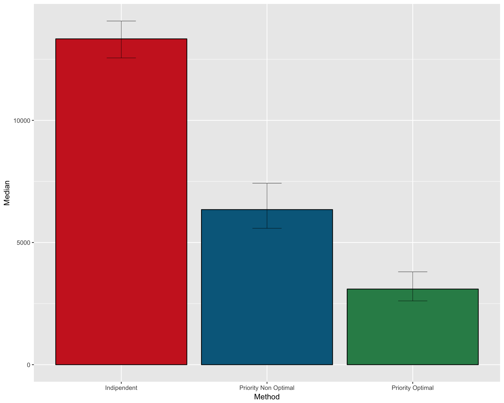
ggsave(filename="version_6.0/Figures/fig5B.svg", plot=gpfs1, device = "svg")## Saving 10 x 8 in imageProportion trial 2-sample
Perform a 1-side 2-sample sample size calculation for difference in proportion with:
- pCase = 0.4
- pControl = 0.1
- case.fraction = 0.5
- power = 0.8
NOT OPTIMAL
set.seed(111)
# NOT optimal
prop2 <- mclapply(1:100 , function(x){
out <- propPowerSampleSize(PTD_panel
, alterationType = c("mutations", "copynumber")
, pCase = 0.4
, pControl = 0.1
, power = 0.8
, case.fraction = 0.5
, type = "chisquare"
, var = "drug"
, side = 1
, tumor.weights = c(brca=brca_tot
, luad=luad_tot
, lusc=lusc_tot
, stad = stad_tot
, coadread = coadread_tot
)
, noPlot=TRUE)
out <- out[ order(out$Var) , ]
return(out)
} , mc.cores=detectCores())
Screenings <- sapply(prop2 , function(x) x$ScreeningSampleSize)
medianScreening <- apply(Screenings , 1 , function(x) {
paste(median(x)
, paste0( "(" , quantile(x , 0.025)
, "-"
, quantile(x , 0.975) , ")"))
})
prop2DF <- data.frame(Var = prop2[[1]]$Var
, ScreeningSampleSize = medianScreening
, EligibleSampleSize = prop2[[1]]$EligibleSampleSize
, Beta = 0.2
, Power = 0.8
, Proportion.In.Case.Control = "0.4 - 0.1")
#export
#write.table(surv2, file = "~/Desktop/notoptimal_ptd-showcase.txt", quote=FALSE, sep=",")
#preview
kable(prop2DF[ match(c("Full Design" , drugs , "no_drug") , prop2DF$Var) , ] , row.names=FALSE)| Var | ScreeningSampleSize | EligibleSampleSize | Beta | Power | Proportion.In.Case.Control |
|---|---|---|---|---|---|
| Full Design | 71 (70-72) | 46 | 0.2 | 0.8 | 0.4 - 0.1 |
| HER2 inhibitor | 2636 (2239.075-3095.025) | 46 | 0.2 | 0.8 | 0.4 - 0.1 |
| PARP inhibitor | 513 (475.95-550.1) | 46 | 0.2 | 0.8 | 0.4 - 0.1 |
| AKT inhibitor | 155 (150-160) | 46 | 0.2 | 0.8 | 0.4 - 0.1 |
| EGFR inhibitor | 1871 (1614.275-2155.75) | 46 | 0.2 | 0.8 | 0.4 - 0.1 |
| FGFR inhibitor | 467 (445-498.525) | 46 | 0.2 | 0.8 | 0.4 - 0.1 |
| ALK inhibitor | 1344 (1192.275-1531.875) | 46 | 0.2 | 0.8 | 0.4 - 0.1 |
| BRAF inhibitor | 1085 (982.4-1230.25) | 46 | 0.2 | 0.8 | 0.4 - 0.1 |
| MET inhibitor | 2840 (2412.025-3359) | 46 | 0.2 | 0.8 | 0.4 - 0.1 |
| NOTCH inhibitor | 823.5 (738.325-919.55) | 46 | 0.2 | 0.8 | 0.4 - 0.1 |
| Immune Checkpoint Inhibitor | 3433 (2851.225-4371.025) | 46 | 0.2 | 0.8 | 0.4 - 0.1 |
| no_drug | 215 (205.95-223) | 46 | 0.2 | 0.8 | 0.4 - 0.1 |
- Median Number of patients necessary with CI: 15308 (13929.22-16743.7)
OPTIMAL
set.seed(112)
simulprop2 <- mclapply(1:100 , function(x) {
propPowerSampleSize(PTD_panel
, alterationType = c("mutations", "copynumber")
, pCase = 0.4
, pControl = 0.1
, power = 0.8
, case.fraction = 0.5
, var = "drug"
, type = "chisquare"
, tumor.weights = c(brca=brca_tot
, luad=luad_tot
, lusc=lusc_tot
, stad = stad_tot
, coadread = coadread_tot
)
, noPlot=TRUE
, priority.trial=drugs
, priority.trial.order="optimal")$`pCase:0.4 | pControl:0.1 | Power:0.8`$Summary
} , mc.cores=detectCores())
prop2summaryMat2 <- simulprop2[[1]]
for(i in rownames(prop2summaryMat2)){
for(j in colnames(prop2summaryMat2)){
vec <- sapply(simulprop2 , function(x) x[i , j])
prop2summaryMat2[i , j] <- paste(median(vec) ,
paste0( "(" , quantile(vec , 0.025)
, "-"
, quantile(vec , 0.975) , ")"))
}
}
#save
#write.table(summaryMat2, file = "~/Desktop/optimal_ptd-showcase.txt", quote=FALSE, sep=",")
#preview
kable(prop2summaryMat2)| Immune Checkpoint Inhibitor | HER2 inhibitor | MET inhibitor | EGFR inhibitor | ALK inhibitor | BRAF inhibitor | NOTCH inhibitor | PARP inhibitor | FGFR inhibitor | AKT inhibitor | Total | |
|---|---|---|---|---|---|---|---|---|---|---|---|
| Screened | 4328 (261.85-5049) | 0 (0-140.324999999999) | 0 (0-4105.15) | 0 (0-0) | 0 (0-0) | 0 (0-0) | 0 (0-0) | 0 (0-0) | 0 (0-0) | 0 (0-0) | 4441 (3854.175-5049) |
| Eligible | 58 (58-63.525) | 69 (58-89.525) | 64 (58-83.1) | 101 (79-122.05) | 116 (95-133.05) | 155.5 (129.425-186.575) | 207 (168.475-244.05) | 320 (269.425-369.1) | 296.5 (259.425-351) | 932.5 (804.9-1081.725) | 2313 (2025.175-2646.825) |
| Not.Eligible | 2088 (126.9-2424.025) | 0 (0-67.3499999999995) | 0 (0-1986.85) | 0 (0-0) | 0 (0-0) | 0 (0-0) | 0 (0-0) | 0 (0-0) | 0 (0-0) | 0 (0-0) | 2144.5 (1840.95-2424.025) |
Number of patients necessary under optimal design (median value): 4441 (3854.175-5049)
Basically the number of samples screened for Immune check inhibitor, that is targetable only in a very small number of patients, is sufficient to cover all the other drugs in most of the cases.
The percentage of samples saved from passing from a non optimal (all drugs separated) to an optimal design (all drugs evaluated together) is 70.99%
PRIORITY NON OPTIMAL
Perform a priority trial starting from the drug with the highest frequency (NON OPTIMAL)
set.seed(112)
simulprop2_NO <- mclapply(1:100 , function(x) {
propPowerSampleSize(PTD_panel
, alterationType = c("mutations", "copynumber")
, pCase = 0.4
, pControl = 0.1
, power = 0.8
, case.fraction = 0.5
, var = "drug"
, type = "chisquare"
, tumor.weights = c(brca=brca_tot
, luad=luad_tot
, lusc=lusc_tot
, stad = stad_tot
, coadread = coadread_tot
)
, noPlot=TRUE
, priority.trial=names(drugFreqs)
, priority.trial.order="as.is")$`pCase:0.4 | pControl:0.1 | Power:0.8`$Summary
} , mc.cores=detectCores())
prop2summaryMat2_NO <- simulprop2_NO[[1]]
for(i in rownames(prop2summaryMat2_NO)){
for(j in colnames(prop2summaryMat2_NO)){
vec <- sapply(simulprop2_NO , function(x) x[i , j])
prop2summaryMat2_NO[i , j] <- paste(median(vec) ,
paste0( "(" , quantile(vec , 0.025)
, "-"
, quantile(vec , 0.975) , ")"))
}
}
#save
#write.table(summaryMat3, file = "~/Desktop/optimal_ptd-showcase.txt", quote=FALSE, sep=",")
#preview
kable(prop2summaryMat2_NO)| AKT inhibitor | FGFR inhibitor | PARP inhibitor | NOTCH inhibitor | BRAF inhibitor | ALK inhibitor | EGFR inhibitor | HER2 inhibitor | MET inhibitor | Immune Checkpoint Inhibitor | Total | |
|---|---|---|---|---|---|---|---|---|---|---|---|
| Screened | 195.5 (186.95-202) | 448 (413.95-489.525) | 248 (184.375-307.725) | 635 (528.45-742.05) | 383.5 (218.9-612.75) | 959 (726.95-1233.1) | 820.5 (416.025-1259.975) | 2195 (1583.5-2892.3) | 1022.5 (44.125-1952.375) | 2356 (1376.325-3359.775) | 9200.5 (8234.475-10500.15) |
| Eligible | 2649.5 (2371-3031.05) | 646 (561.425-742.15) | 508 (441.9-590.525) | 248 (210.95-296.525) | 254.5 (211.9-295.1) | 142.5 (120.475-172) | 132.5 (110-159.825) | 76.5 (67.475-86) | 75 (66.475-83.525) | 58 (58-58.525) | 4774 (4300.55-5423.575) |
| Not.Eligible | 94 (89-99) | 215 (196.425-238) | 119.5 (87.95-149.05) | 305 (252.175-352) | 181 (104.425-297.925) | 463 (349.275-593.3) | 392 (201.75-609.775) | 1045.5 (755.6-1386.75) | 478.5 (20.875-923.299999999999) | 2326 (1357.9-3316.775) | 5552 (4792.5-6772.625) |
Number of patients necessary under non optimal priority design (median value with CI): 6314 (5544.425-7294.25)
FULL SUMMARY OF THE THREE METHODS
Create a dataframe with median and CI for the three methods
propd <- data.frame( Method = c("Indipendent" , "Priority Non Optimal" , "Priority Optimal")
, Median = c(median(n_patients_notoptimal)
, median(n_patients_optimal_NO)
, median(n_patients_optimal))
, CI_low = c(quantile(n_patients_notoptimal , 0.025)
, quantile(n_patients_optimal_NO , 0.025)
, quantile(n_patients_optimal , 0.025))
, CI_high = c(quantile(n_patients_notoptimal , 0.975)
, quantile(n_patients_optimal_NO , 0.975)
, quantile(n_patients_optimal , 0.975)))
kable(propd)| Method | Median | CI_low | CI_high |
|---|---|---|---|
| Indipendent | 15308.0 | 13929.225 | 16743.70 |
| Priority Non Optimal | 9200.5 | 8234.475 | 10500.15 |
| Priority Optimal | 4441.0 | 3854.175 | 5049.00 |
Plot as barplot
gpropd <- ggplot(propd, aes(x=Method, y=Median)) +
geom_bar(position=position_dodge(), stat="identity"
, fill = c("firebrick3" , "deepskyblue4" , "seagreen4")
, col=rep("black",3)) +
geom_errorbar(aes(ymin=CI_low, ymax=CI_high)
, width=.2
, position=position_dodge(.9)
, size=0.2
)
gpropd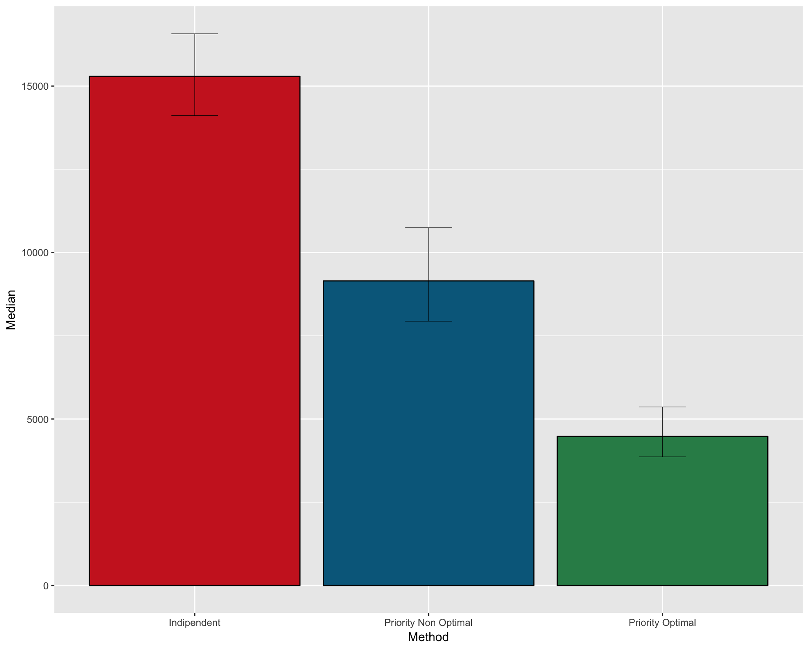
ggsave(filename="version_6.0/Figures/fig5C.svg", plot=gpropd, device = "svg")## Saving 10 x 8 in imageProportion trial 1-sample
Perform a 1-side 1-sample sample size calculation for difference in proportion with:
- pCase = 0.4
- pControl = 0.1
- power = 0.8
NOT OPTIMAL
set.seed(111)
# NOT optimal
prop3 <- mclapply(1:100 , function(x){
out <- propPowerSampleSize(PTD_panel
, alterationType = c("mutations", "copynumber")
, pCase = 0.4
, pControl = 0.1
, power = 0.8
, type = "arcsin"
, var = "drug"
, side = 1
, tumor.weights = c(brca=brca_tot
, luad=luad_tot
, lusc=lusc_tot
, stad = stad_tot
, coadread = coadread_tot
)
, noPlot=TRUE)
out <- out[ order(out$Var) , ]
return(out)
} , mc.cores=detectCores())
Screenings <- sapply(prop3 , function(x) x$ScreeningSampleSize)
medianScreening <- apply(Screenings , 1 , function(x) {
paste(median(x)
, paste0( "(" , quantile(x , 0.025)
, "-"
, quantile(x , 0.975) , ")"))
})
prop3DF <- data.frame(Var = prop3[[1]]$Var
, ScreeningSampleSize = medianScreening
, EligibleSampleSize = prop3[[1]]$EligibleSampleSize
, Beta = 0.2
, Power = 0.8
, Proportion.In.Case.Control = "0.4 - 0.1")
#export
#write.table(surv2, file = "~/Desktop/notoptimal_ptd-showcase.txt", quote=FALSE, sep=",")
#preview
kable(prop3DF[ match(c("Full Design" , drugs , "no_drug") , prop3DF$Var) , ] , row.names=FALSE)| Var | ScreeningSampleSize | EligibleSampleSize | Beta | Power | Proportion.In.Case.Control |
|---|---|---|---|---|---|
| Full Design | 20 (20-21) | 13 | 0.2 | 0.8 | 0.4 - 0.1 |
| HER2 inhibitor | 755 (631-911.95) | 13 | 0.2 | 0.8 | 0.4 - 0.1 |
| PARP inhibitor | 145 (137-157.05) | 13 | 0.2 | 0.8 | 0.4 - 0.1 |
| AKT inhibitor | 44 (43-45.525) | 13 | 0.2 | 0.8 | 0.4 - 0.1 |
| EGFR inhibitor | 529 (458.95-599.3) | 13 | 0.2 | 0.8 | 0.4 - 0.1 |
| FGFR inhibitor | 132.5 (124.475-143.05) | 13 | 0.2 | 0.8 | 0.4 - 0.1 |
| ALK inhibitor | 379 (343.85-423.2) | 13 | 0.2 | 0.8 | 0.4 - 0.1 |
| BRAF inhibitor | 305 (280.475-343.525) | 13 | 0.2 | 0.8 | 0.4 - 0.1 |
| MET inhibitor | 782 (676.6-921.475) | 13 | 0.2 | 0.8 | 0.4 - 0.1 |
| NOTCH inhibitor | 234 (217-254.525) | 13 | 0.2 | 0.8 | 0.4 - 0.1 |
| Immune Checkpoint Inhibitor | 992 (821.325-1177) | 13 | 0.2 | 0.8 | 0.4 - 0.1 |
| no_drug | 61 (58.475-63) | 13 | 0.2 | 0.8 | 0.4 - 0.1 |
- Median Number of patients necessary with CI: 4293 (3979.6-4597.525)
OPTIMAL
set.seed(112)
simulprop3 <- mclapply(1:100 , function(x) {
propPowerSampleSize(PTD_panel
, alterationType = c("mutations", "copynumber")
, pCase = 0.4
, pControl = 0.1
, power = 0.8
, var = "drug"
, type = "arcsin"
, tumor.weights = c(brca=brca_tot
, luad=luad_tot
, lusc=lusc_tot
, stad = stad_tot
, coadread = coadread_tot
)
, noPlot=TRUE
, priority.trial=drugs
, priority.trial.order="optimal")$`pCase:0.4 | pControl:0.1 | Power:0.8`$Summary
} , mc.cores=detectCores())
prop3summaryMat2 <- simulprop3[[1]]
for(i in rownames(prop3summaryMat2)){
for(j in colnames(prop3summaryMat2)){
vec <- sapply(simulprop3 , function(x) x[i , j])
prop3summaryMat2[i , j] <- paste(median(vec) ,
paste0( "(" , quantile(vec , 0.025)
, "-"
, quantile(vec , 0.975) , ")"))
}
}
#save
#write.table(summaryMat2, file = "~/Desktop/optimal_ptd-showcase.txt", quote=FALSE, sep=",")
#preview
kable(prop3summaryMat2)| Immune Checkpoint Inhibitor | HER2 inhibitor | MET inhibitor | EGFR inhibitor | ALK inhibitor | BRAF inhibitor | NOTCH inhibitor | PARP inhibitor | FGFR inhibitor | AKT inhibitor | Total | |
|---|---|---|---|---|---|---|---|---|---|---|---|
| Screened | 1194 (75.95-1469) | 0 (0-1083.35) | 0 (0-1093.325) | 0 (0-0) | 0 (0-0) | 0 (0-0) | 0 (0-0) | 0 (0-0) | 0 (0-0) | 0 (0-0) | 1210.5 (1052.375-1469) |
| Eligible | 16 (16-18) | 20 (16-25.525) | 18 (16-24) | 29 (23.475-35) | 32 (26.475-39) | 43 (35-53) | 57 (48-69) | 88 (72.95-109.05) | 82 (70-103) | 256.5 (222.475-311.1) | 634.5 (553.425-767.4) |
| Not.Eligible | 572 (37-703.875) | 0 (0-523.7) | 0 (0-522.525) | 0 (0-0) | 0 (0-0) | 0 (0-0) | 0 (0-0) | 0 (0-0) | 0 (0-0) | 0 (0-0) | 583.5 (504.95-703.875) |
Number of patients necessary under optimal design (median value): 1210.5 (1052.375-1469)
Basically the number of samples screened for Immune check inhibitor, that is targetable only in a very small number of patients, is sufficient to cover all the other drugs in most of the cases.
The percentage of samples saved from passing from a non optimal (all drugs separated) to an optimal design (all drugs evaluated together) is 71.8%
PRIORITY NON OPTIMAL
Perform a priority trial starting from the drug with the highest frequency (NON OPTIMAL)
set.seed(112)
simulprop3_NO <- mclapply(1:100 , function(x) {
propPowerSampleSize(PTD_panel
, alterationType = c("mutations", "copynumber")
, pCase = 0.4
, pControl = 0.1
, power = 0.8
, var = "drug"
, type = "arcsin"
, tumor.weights = c(brca=brca_tot
, luad=luad_tot
, lusc=lusc_tot
, stad = stad_tot
, coadread = coadread_tot
)
, noPlot=TRUE
, priority.trial=names(drugFreqs)
, priority.trial.order="as.is")$`pCase:0.4 | pControl:0.1 | Power:0.8`$Summary
} , mc.cores=detectCores())
prop3summaryMat2_NO <- simulprop3_NO[[1]]
for(i in rownames(prop3summaryMat2_NO)){
for(j in colnames(prop3summaryMat2_NO)){
vec <- sapply(simulprop3_NO , function(x) x[i , j])
prop3summaryMat2_NO[i , j] <- paste(median(vec) ,
paste0( "(" , quantile(vec , 0.025)
, "-"
, quantile(vec , 0.975) , ")"))
}
}
#save
#write.table(summaryMat3, file = "~/Desktop/optimal_ptd-showcase.txt", quote=FALSE, sep=",")
#preview
kable(prop3summaryMat2_NO)| AKT inhibitor | FGFR inhibitor | PARP inhibitor | NOTCH inhibitor | BRAF inhibitor | ALK inhibitor | EGFR inhibitor | HER2 inhibitor | MET inhibitor | Immune Checkpoint Inhibitor | Total | |
|---|---|---|---|---|---|---|---|---|---|---|---|
| Screened | 54 (52-56) | 123.5 (114-135) | 68 (53-88.525) | 178 (149.9-211.575) | 93.5 (54.9-159.15) | 261.5 (201.425-337.625) | 248.5 (102.325-391.975) | 598.5 (406.475-781.575) | 263.5 (15.725-591.4) | 612 (265.425-974.35) | 2518.5 (2180.55-2979.825) |
| Eligible | 723 (623.375-862.175) | 177 (151-211.25) | 139 (113.95-171.3) | 68 (55.475-80.525) | 71 (58.475-85.05) | 40 (33-49.525) | 35 (29.475-44.525) | 21 (19-24.525) | 21 (18-24) | 16 (16-16) | 1314.5 (1132.275-1537.2) |
| Not.Eligible | 26 (25-28) | 59 (55-66) | 33 (26-42.525) | 85.5 (71.95-103.525) | 44.5 (25.95-76.575) | 125.5 (96.475-159.575) | 119.5 (48.95-186.2) | 286.5 (196.9-375.525) | 127 (8.125-280.5) | 603.5 (261.425-963.35) | 1517.5 (1182.9-1905.95) |
Number of patients necessary under non optimal priority design (median value with CI): 2518.5 (2180.55-2979.825)
FULL SUMMARY OF THE THREE METHODS
Create a dataframe with median and CI for the three methods
propd1 <- data.frame( Method = c("Indipendent" , "Priority Non Optimal" , "Priority Optimal")
, Median = c(median(n_patients_notoptimal)
, median(n_patients_optimal_NO)
, median(n_patients_optimal))
, CI_low = c(quantile(n_patients_notoptimal , 0.025)
, quantile(n_patients_optimal_NO , 0.025)
, quantile(n_patients_optimal , 0.025))
, CI_high = c(quantile(n_patients_notoptimal , 0.975)
, quantile(n_patients_optimal_NO , 0.975)
, quantile(n_patients_optimal , 0.975)))
kable(propd1)| Method | Median | CI_low | CI_high |
|---|---|---|---|
| Indipendent | 4293.0 | 3979.600 | 4597.525 |
| Priority Non Optimal | 2518.5 | 2180.550 | 2979.825 |
| Priority Optimal | 1210.5 | 1052.375 | 1469.000 |
Plot as barplot
gpropd1 <- ggplot(propd1, aes(x=Method, y=Median)) +
geom_bar(position=position_dodge(), stat="identity"
, fill = c("firebrick3" , "deepskyblue4" , "seagreen4")
, col=rep("black",3)) +
geom_errorbar(aes(ymin=CI_low, ymax=CI_high)
, width=.2
, position=position_dodge(.9)
, size=0.2
)
gpropd1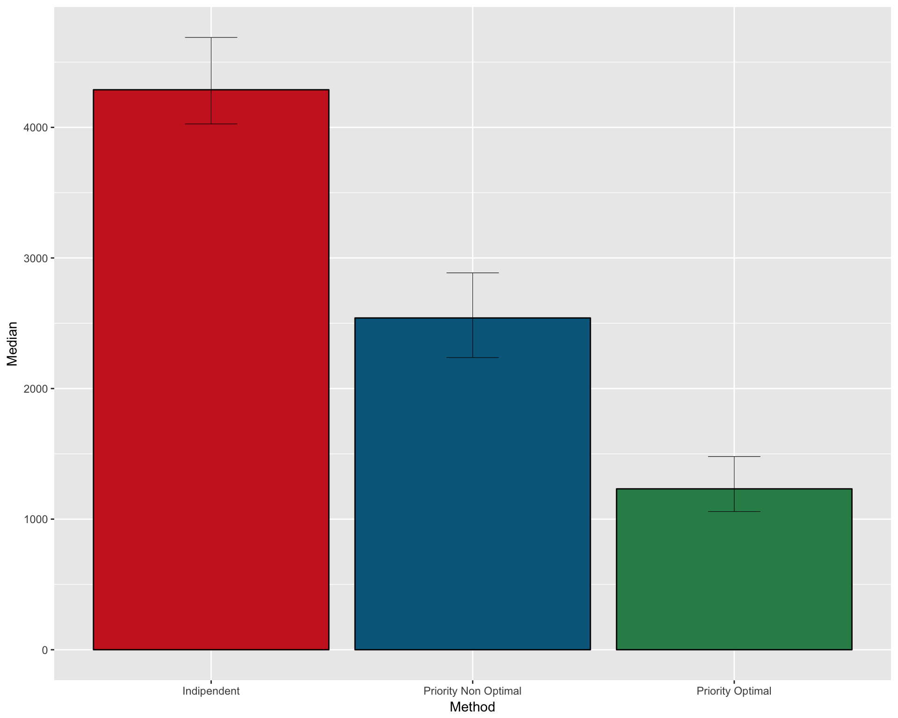
ggsave(filename="version_6.0/Figures/fig5D.svg", plot=gpropd1, device = "svg")## Saving 10 x 8 in imageOne figure for all
sampSizeMethods <- rbind(pfs2 , pfs1 , propd , propd1)
sampSizeMethods$Design <- rep(c("Survival 2 Sample" , "Survival 1 Sample" , "Proportion 2 Sample" , "Proportion 1 Sample")
, c(3,3,3,3))gsampSizeMethods <- ggplot(sampSizeMethods, aes(x=Design, y=Median , fill=Method)) +
geom_bar(position=position_dodge(), stat="identity" , color="black")+
scale_fill_manual(values=c("firebrick3" , "deepskyblue4" , "seagreen4"))+
geom_errorbar(aes(ymin=CI_low, ymax=CI_high)
, width=.2
, position=position_dodge(.9)
, size=0.2
)
gsampSizeMethods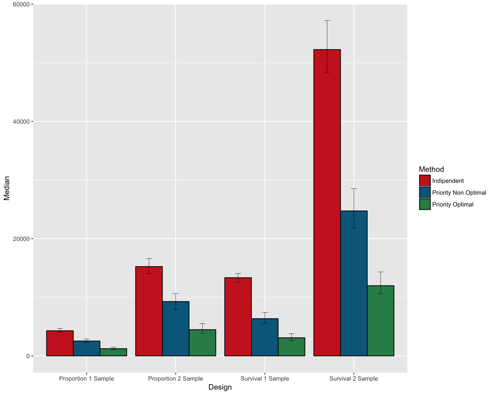
ggsave(filename="version_6.0/Figures/fig3B.svg", plot=gsampSizeMethods, device = "svg")## Saving 10 x 8 in imageSession info
For reproducibility purpose:
sessionInfo()## R version 3.4.3 (2017-11-30)
## Platform: x86_64-apple-darwin15.6.0 (64-bit)
## Running under: macOS Sierra 10.12.6
##
## Matrix products: default
## BLAS: /Library/Frameworks/R.framework/Versions/3.4/Resources/lib/libRblas.0.dylib
## LAPACK: /Library/Frameworks/R.framework/Versions/3.4/Resources/lib/libRlapack.dylib
##
## locale:
## [1] en_US.UTF-8/en_US.UTF-8/en_US.UTF-8/C/en_US.UTF-8/en_US.UTF-8
##
## attached base packages:
## [1] parallel stats4 stats graphics grDevices utils datasets
## [8] methods base
##
## other attached packages:
## [1] gdtools_0.1.7 svglite_1.2.1
## [3] bindrcpp_0.2 readxl_1.0.0
## [5] ggplot2_2.2.1.9000 DT_0.4
## [7] rtracklayer_1.36.6 GenomicRanges_1.28.6
## [9] GenomeInfoDb_1.12.3 IRanges_2.10.5
## [11] S4Vectors_0.14.7 BiocGenerics_0.22.1
## [13] knitr_1.20 PrecisionTrialDesigner_0.99.0
## [15] BiocStyle_2.4.1
##
## loaded via a namespace (and not attached):
## [1] bitops_1.0-6 matrixStats_0.53.1
## [3] bit64_0.9-7 RColorBrewer_1.1-2
## [5] progress_1.1.2 httr_1.3.1
## [7] rprojroot_1.3-2 tools_3.4.3
## [9] backports_1.1.2 R6_2.2.2
## [11] DBI_0.7 lazyeval_0.2.1
## [13] colorspace_1.3-2 tidyselect_0.2.4
## [15] prettyunits_1.0.2 bit_1.1-12
## [17] curl_3.1 compiler_3.4.3
## [19] Biobase_2.36.2 LowMACAAnnotation_0.99.3
## [21] profileModel_0.5-9 DelayedArray_0.2.7
## [23] labeling_0.3 scales_0.5.0.9000
## [25] brglm_0.6.1 readr_1.1.1
## [27] stringr_1.3.0 digest_0.6.15
## [29] Rsamtools_1.28.0 shinyBS_0.61
## [31] rmarkdown_1.8 XVector_0.16.0
## [33] pkgconfig_2.0.1 htmltools_0.3.6
## [35] highr_0.6 htmlwidgets_1.0
## [37] rlang_0.2.0 RSQLite_2.0
## [39] BiocInstaller_1.26.1 shiny_1.0.5
## [41] bindr_0.1 jsonlite_1.5
## [43] crosstalk_1.0.1 BiocParallel_1.10.1
## [45] dplyr_0.7.4 R.oo_1.21.0
## [47] RCurl_1.95-4.10 magrittr_1.5
## [49] GenomeInfoDbData_0.99.0 Matrix_1.2-12
## [51] Rcpp_0.12.15 munsell_0.4.3
## [53] R.methodsS3_1.7.1 stringi_1.1.6
## [55] yaml_2.1.17 SummarizedExperiment_1.6.5
## [57] zlibbioc_1.22.0 plyr_1.8.4
## [59] AnnotationHub_2.8.3 grid_3.4.3
## [61] blob_1.1.0 ggrepel_0.7.0
## [63] lattice_0.20-35 Biostrings_2.44.2
## [65] hms_0.4.1 pillar_1.2.1
## [67] cgdsr_1.2.10 reshape2_1.4.3
## [69] codetools_0.2-15 biomaRt_2.35.11
## [71] googleVis_0.6.3 XML_3.98-1.10
## [73] glue_1.2.0 evaluate_0.10.1
## [75] data.table_1.10.4-3 httpuv_1.3.6.1
## [77] testthat_2.0.0 cellranger_1.1.0
## [79] tidyr_0.8.0 gtable_0.2.0
## [81] purrr_0.2.4 assertthat_0.2.0
## [83] mime_0.5 xtable_1.8-2
## [85] tibble_1.4.2 GenomicAlignments_1.12.2
## [87] AnnotationDbi_1.38.2 memoise_1.1.0
## [89] interactiveDisplayBase_1.14.0Frequency is calculated on the the selected population for the study (i.e. frequency sum = 1) and not on the overall cancer population that includes all tumor types.↩
Frequency is calculated on the the selected population for the study (i.e. frequency sum = 1) and not on the overall cancer population that includes all tumor types.↩
Copyright © 2017 Giorgio Melloni. All rights reserved.